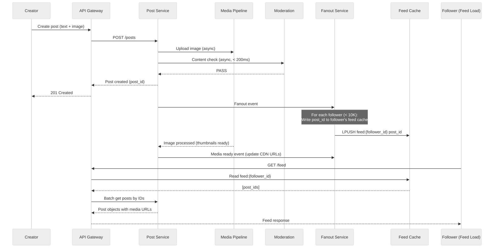
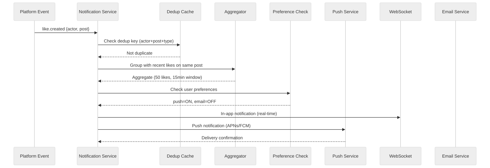
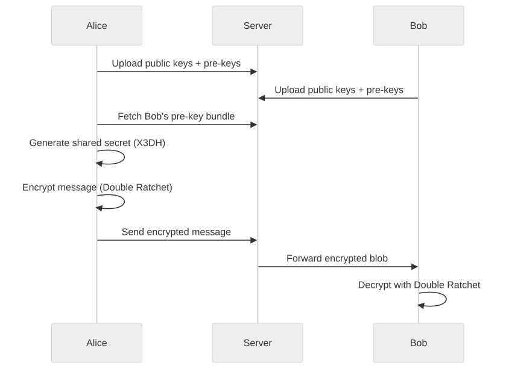
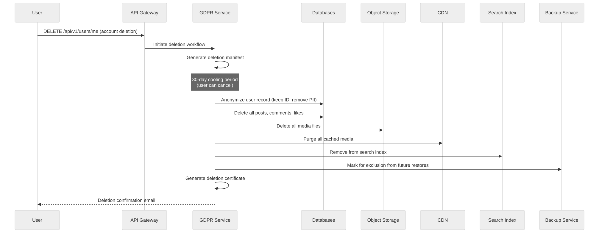
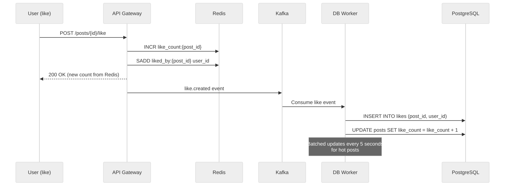
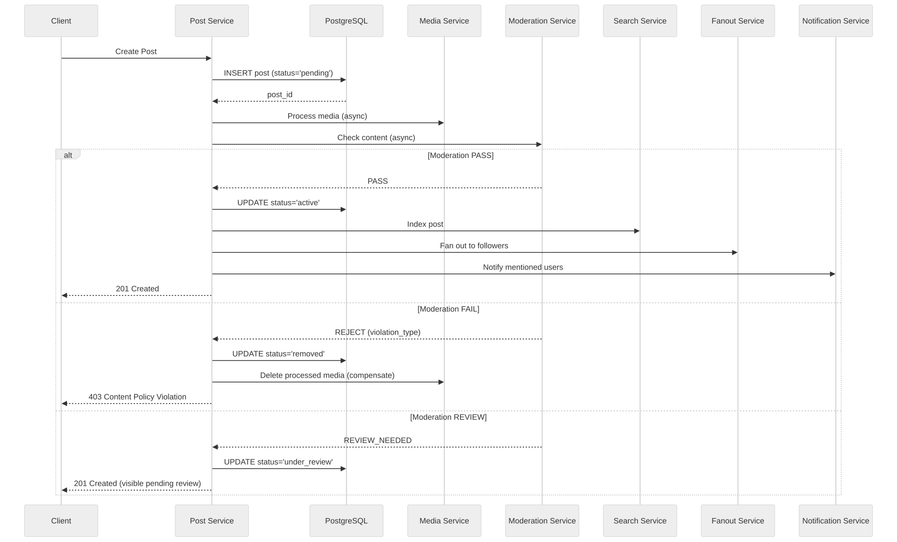
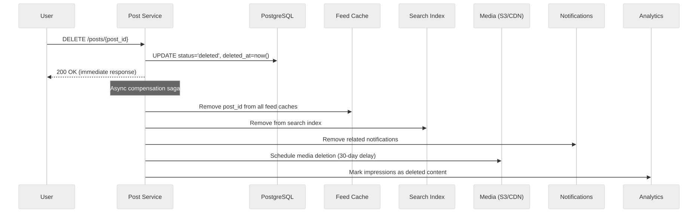

Part Context
Part: Part 5 — Real-World System Design Examples Position: Chapter 20 of 60 Why this part exists: This section translates distributed-systems theory into realistic product designs across consumer apps, marketplaces, media, payments, search, notifications, collaboration, infrastructure, and operations-heavy platforms.
Overview
Social media platforms are among the most architecturally demanding systems in existence. They combine graph data at billion-node scale, real-time feed generation with ML ranking, media processing pipelines handling petabytes per day, notification fanout to hundreds of millions of devices, and content moderation systems that must make safety decisions in milliseconds.
This chapter performs a deep-dive into four domain areas that together form a complete social media and content platform:
Domain A — Core Social Graph
The four subsystems that model users and their relationships:
- User Profile System — identity, preferences, privacy settings, and public profile data.
- Follow/Friend Graph System — directed and undirected relationship graphs at billion-edge scale.
- Feed Generation System — the central product surface: fanout-on-write vs. fanout-on-read, ranking, and personalization.
- Activity Stream System — chronological record of user and friend actions across the platform.
Domain B — Content Systems
The four subsystems that handle content creation and delivery:
- Post Creation System — text, media, mentions, hashtags, and privacy-scoped publishing.
- Media Upload & Processing — image and video ingestion, transcoding, thumbnail generation, and CDN distribution.
- Story/Reels/Shorts System — ephemeral and short-form video content with creation tools and distribution.
- Live Streaming System — real-time video broadcast with chat, reactions, and adaptive bitrate delivery.
Domain C — Engagement
The three subsystems that drive interaction and retention:
- Likes/Comments System — high-throughput engagement counters and threaded discussions.
- Notification System — real-time push, in-app, email, and SMS notifications with delivery optimization.
- Messaging/Chat System — 1:1 and group messaging with end-to-end encryption and media sharing.
Domain D — Moderation
The three subsystems that keep the platform safe:
- Content Moderation System — automated and human review of content against platform policies.
- Abuse Detection System — detecting coordinated inauthentic behavior, harassment, and spam.
- Report & Review System — user-initiated reports with review queues and appeals.
Why This System Matters in Real Systems
- Social platforms combine read-heavy fanout (celebrity with 100M followers posts → 100M feed updates) with write amplification that can exceed any other consumer workload.
- User-generated content creates moderation, abuse, and safety requirements that fundamentally shape the data flow architecture.
- Media-heavy experiences force trade-offs between upload latency, transcoding quality, storage cost, and CDN bandwidth.
- Feed ranking and recommendation algorithms directly determine what billions of people see, making this architecture one of the most consequential in technology.
- This domain is the most common interview topic for senior system design roles because it exposes graph data structures, fanout strategies, caching at scale, real-time systems, and ML serving.
Problem Framing
Business Context
A large-scale social media platform serves hundreds of millions of daily active users who create, share, and consume content. The platform supports text posts, images, videos, stories, live streams, and messaging. Revenue is primarily advertising-driven, making engagement metrics (DAU, time-on-platform, content interactions) the key business drivers.
Key business constraints: - Engagement is everything: Feed freshness and relevance directly drive time-on-platform and ad revenue. - Creator retention: If creators don't get engagement, they leave. Distribution fairness is a product requirement. - Safety is existential: Content moderation failures lead to advertiser boycotts, regulatory action, and reputational damage. - Global reach: Users in 200+ countries with varying network conditions, languages, and content norms. - Real-time expectations: Users expect posts to appear in friends' feeds within seconds, not minutes.
Assumptions
- 500 million DAU, 2 billion MAU.
- Users create 200 million posts per day (50% with media).
- Average user follows 200 accounts; median is 150, but power-law distribution means some users follow 5,000+.
- 10 million creators have > 100K followers; 1,000 mega-creators have > 10M followers.
- The platform serves 50 billion feed impressions per day.
- 1 petabyte of new media uploaded per day.
- Messaging: 100 billion messages per day across 1:1 and group chats.
Explicit Exclusions
- Ad serving and auction system (covered in Chapter 35: AdTech)
- Recommendation ML model training (covered in Chapter 27: ML & AI)
- Payment/tipping features (covered in Chapter 19: Fintech)
- AR/VR experiences
Functional Requirements
| ID | Requirement | Subsystem |
|---|---|---|
| FR-01 | Users can create and manage profiles with bio, avatar, privacy settings | Profile |
| FR-02 | Users can follow/unfollow other users; some platforms support mutual friendship | Graph |
| FR-03 | Users see a personalized feed ranked by relevance and recency | Feed |
| FR-04 | Users can create posts with text, images, videos, mentions, hashtags | Post Creation |
| FR-05 | Media is processed (resized, transcoded) and served via CDN | Media Pipeline |
| FR-06 | Users can publish ephemeral stories (24h) and short-form videos | Stories/Reels |
| FR-07 | Users can broadcast live video with real-time viewer interaction | Live Streaming |
| FR-08 | Users can like, comment on, and share posts | Engagement |
| FR-09 | Users receive real-time notifications for relevant activities | Notifications |
| FR-10 | Users can send direct messages with E2E encryption | Messaging |
| FR-11 | Content violating policies is detected and removed automatically or via human review | Moderation |
| FR-12 | Users can report content; reports are reviewed and actioned | Reports |
Non-Functional Requirements
| Category | Requirement | Target |
|---|---|---|
| Latency | Feed load p99 | < 500ms |
| Latency | Post creation p99 | < 1s |
| Latency | Like/comment p99 | < 200ms |
| Latency | Notification delivery | < 5s from trigger event |
| Latency | Message delivery | < 500ms |
| Throughput | Feed requests | 500,000 RPS |
| Throughput | Post creation | 2,500 TPS |
| Throughput | Likes | 50,000 TPS |
| Throughput | Messages | 1.2M messages/second |
| Availability | Feed and core APIs | 99.99% |
| Availability | Messaging | 99.99% |
| Consistency | Follow graph | Eventual (< 5s) |
| Consistency | Like/comment counts | Eventual (approximate counts acceptable) |
| Consistency | Messages | Strong (per-conversation ordering) |
| Storage | Media | 1 PB/day new; 500 PB total |
| Moderation | Automated detection | > 95% of policy violations detected before human reports |
Glossary / Abbreviations
| Term | Definition |
|---|---|
| DAU/MAU | Daily/Monthly Active Users |
| Fanout | The process of distributing a post to all followers' feeds |
| Fanout-on-Write | Pre-compute feeds at write time by pushing to each follower's timeline cache |
| Fanout-on-Read | Compute feeds at read time by pulling from followed users' post lists |
| Hybrid Fanout | Fanout-on-write for regular users, fanout-on-read for mega-creators |
| Write Amplification | One post creating N writes (one per follower). A post by user with 10M followers = 10M writes |
| Social Graph | The network of relationships (follows, friendships) between users |
| Feed Ranking | ML model that scores and orders posts in a user's feed by predicted engagement |
| Engagement Rate | (likes + comments + shares) / impressions |
| CDN | Content Delivery Network — edge servers that cache and serve media close to users |
| HLS | HTTP Live Streaming — adaptive bitrate protocol for video delivery |
| Transcoding | Converting video from one format/resolution to multiple formats for different devices |
| E2E Encryption | End-to-End Encryption — only sender and receiver can read messages |
| Signal Protocol | Cryptographic protocol used by Signal, WhatsApp, and others for E2E encrypted messaging |
| WebSocket | Persistent bidirectional connection for real-time communication |
| CQRS | Command Query Responsibility Segregation |
Actors and Personas

Core Workflows
Happy Path: Create Post and Appear in Followers' Feeds

Fanout Strategy: Hybrid Approach

Why hybrid? A user with 50M followers creates 50M cache writes on every post. This takes minutes and overwhelms the fanout workers. Instead, mega-creator posts are pulled at feed-read time and merged with the pre-built feed.
Capacity Estimation
Feed: - 500M DAU x 10 feed loads/day = 5 billion feed reads/day = ~58,000 RPS - Feed cache: 500M users x 1KB = 500 GB in Redis
Posts: - 200M new posts/day x 2KB metadata = 400 GB/day = 146 TB/year - 100M posts with media x 5MB average = 500 TB/day raw media
Graph: - 2B users x 200 avg follows = 400 billion edges - Adjacency list: ~1.6 TB (fits in memory cluster)
Engagement: - 5B likes/day = ~58,000 TPS - 500M comments/day = ~5,800 TPS
Messages: - 100B messages/day = 1.2M messages/second, 20 TB/day
High-Level Architecture

Low-Level Design
1. User Profile System
Overview
The User Profile System manages user identity, preferences, privacy settings, and public-facing profile data. It is the most-read service on the platform — every feed load, every post display, every comment requires profile data (username, avatar, verification badge).
Data Model
CREATE TABLE users (
user_id UUID PRIMARY KEY DEFAULT gen_random_uuid(),
username TEXT UNIQUE NOT NULL,
display_name TEXT NOT NULL,
email TEXT UNIQUE NOT NULL,
phone TEXT UNIQUE,
bio TEXT,
avatar_url TEXT,
cover_url TEXT,
website TEXT,
location TEXT,
is_verified BOOLEAN DEFAULT false,
is_private BOOLEAN DEFAULT false,
status TEXT DEFAULT 'active' CHECK (status IN ('active', 'suspended', 'deactivated', 'banned')),
follower_count INT DEFAULT 0,
following_count INT DEFAULT 0,
post_count INT DEFAULT 0,
locale TEXT DEFAULT 'en',
created_at TIMESTAMPTZ NOT NULL DEFAULT now(),
updated_at TIMESTAMPTZ NOT NULL DEFAULT now()
);
CREATE TABLE user_settings (
user_id UUID PRIMARY KEY REFERENCES users(user_id),
notification_preferences JSONB DEFAULT '{}',
privacy_settings JSONB DEFAULT '{}',
content_preferences JSONB DEFAULT '{}',
two_factor_enabled BOOLEAN DEFAULT false,
language TEXT DEFAULT 'en'
);
Caching Strategy
Profile data is read thousands of times per second for popular users. Profile card (lightweight read for feed/comments):
{"user_id": "usr_abc", "username": "johndoe", "display_name": "John Doe",
"avatar_url": "https://cdn.example.com/avatars/usr_abc_sm.jpg", "is_verified": true}
Stored in Redis as a hash. TTL: 5 minutes, event-driven invalidation on profile update.
Extended Data Model
-- User authentication credentials (separated for security)
CREATE TABLE user_credentials (
user_id UUID PRIMARY KEY REFERENCES users(user_id),
password_hash TEXT NOT NULL,
password_salt TEXT NOT NULL,
mfa_secret TEXT,
mfa_backup_codes TEXT[],
last_password_change TIMESTAMPTZ NOT NULL DEFAULT now(),
failed_login_count INT DEFAULT 0,
locked_until TIMESTAMPTZ,
created_at TIMESTAMPTZ NOT NULL DEFAULT now()
);
-- User linked accounts (OAuth providers)
CREATE TABLE user_linked_accounts (
user_id UUID NOT NULL REFERENCES users(user_id),
provider TEXT NOT NULL CHECK (provider IN ('google', 'apple', 'facebook', 'twitter')),
provider_uid TEXT NOT NULL,
access_token TEXT,
refresh_token TEXT,
token_expires TIMESTAMPTZ,
created_at TIMESTAMPTZ NOT NULL DEFAULT now(),
PRIMARY KEY (user_id, provider),
UNIQUE (provider, provider_uid)
);
-- User profile history (for audit / rollback)
CREATE TABLE user_profile_history (
history_id UUID PRIMARY KEY DEFAULT gen_random_uuid(),
user_id UUID NOT NULL REFERENCES users(user_id),
field_name TEXT NOT NULL,
old_value TEXT,
new_value TEXT,
changed_by TEXT NOT NULL CHECK (changed_by IN ('user', 'admin', 'system')),
reason TEXT,
created_at TIMESTAMPTZ NOT NULL DEFAULT now()
);
CREATE INDEX idx_profile_history_user ON user_profile_history(user_id, created_at DESC);
-- User blocks
CREATE TABLE user_blocks (
blocker_id UUID NOT NULL REFERENCES users(user_id),
blocked_id UUID NOT NULL REFERENCES users(user_id),
created_at TIMESTAMPTZ NOT NULL DEFAULT now(),
PRIMARY KEY (blocker_id, blocked_id)
);
CREATE INDEX idx_blocks_blocked ON user_blocks(blocked_id);
-- User mutes
CREATE TABLE user_mutes (
user_id UUID NOT NULL REFERENCES users(user_id),
muted_id UUID NOT NULL REFERENCES users(user_id),
mute_type TEXT DEFAULT 'all' CHECK (mute_type IN ('all', 'stories', 'posts', 'notifications')),
expires_at TIMESTAMPTZ,
created_at TIMESTAMPTZ NOT NULL DEFAULT now(),
PRIMARY KEY (user_id, muted_id)
);
-- Close friends list
CREATE TABLE close_friends (
user_id UUID NOT NULL REFERENCES users(user_id),
friend_id UUID NOT NULL REFERENCES users(user_id),
created_at TIMESTAMPTZ NOT NULL DEFAULT now(),
PRIMARY KEY (user_id, friend_id)
);
REST API Specification
GET /api/v1/users/{user_id} — Fetch user profile
// Response 200
{
"user_id": "usr_abc123",
"username": "johndoe",
"display_name": "John Doe",
"bio": "Software engineer | Dog lover",
"avatar_url": "https://cdn.example.com/avatars/usr_abc123_md.jpg",
"cover_url": "https://cdn.example.com/covers/usr_abc123.jpg",
"website": "https://johndoe.dev",
"location": "San Francisco, CA",
"is_verified": true,
"is_private": false,
"follower_count": 12543,
"following_count": 892,
"post_count": 347,
"relationship": {
"following": true,
"followed_by": false,
"blocked": false,
"muted": false
},
"created_at": "2022-03-15T10:30:00Z"
}
PUT /api/v1/users/me — Update current user profile
// Request
{
"display_name": "John Doe Jr.",
"bio": "Updated bio text",
"website": "https://new-site.dev",
"location": "New York, NY"
}
// Response 200
{
"user_id": "usr_abc123",
"display_name": "John Doe Jr.",
"bio": "Updated bio text",
"updated_at": "2025-01-15T14:22:00Z"
}
PATCH /api/v1/users/me/settings — Update user settings
// Request
{
"privacy_settings": {
"who_can_dm": "followers",
"who_can_see_likes": "only_me",
"show_activity_status": false
},
"notification_preferences": {
"likes": "off",
"comments": "from_following",
"follows": "on",
"dms": "on"
}
}
// Response 200
{
"user_id": "usr_abc123",
"settings_updated": true,
"updated_at": "2025-01-15T14:25:00Z"
}
POST /api/v1/users/{user_id}/block — Block a user
// Response 200
{
"blocker_id": "usr_abc123",
"blocked_id": "usr_xyz789",
"blocked_at": "2025-01-15T14:30:00Z",
"side_effects": {
"unfollowed": true,
"removed_follower": true,
"removed_from_close_friends": true
}
}
GET /api/v1/users/me/blocked — List blocked users
// Response 200
{
"blocked_users": [
{
"user_id": "usr_xyz789",
"username": "spammer42",
"blocked_at": "2025-01-15T14:30:00Z"
}
],
"cursor": "eyJsYXN0X2lkIjoiYmxrXzEyMyJ9",
"has_more": false
}
Profile Search
Profiles are indexed in Elasticsearch for username search, display name search, and "People You May Know" suggestions:
// Elasticsearch document
{
"user_id": "usr_abc123",
"username": "johndoe",
"display_name": "John Doe",
"bio": "Software engineer | Dog lover",
"location": "San Francisco, CA",
"is_verified": true,
"follower_count": 12543,
"mutual_followers": ["usr_def456", "usr_ghi789"]
}
2. Follow/Friend Graph System
Overview
The Follow/Friend Graph System manages the social relationships between users. This is the foundation of feed generation — "who follows whom" determines whose posts appear in whose feed.
At Facebook's scale, the social graph contains over 1 trillion edges across 3 billion users. Facebook built TAO (The Associations and Objects) — a purpose-built distributed graph store.
Data Model
CREATE TABLE follows (
follower_id UUID NOT NULL,
followee_id UUID NOT NULL,
created_at TIMESTAMPTZ NOT NULL DEFAULT now(),
PRIMARY KEY (follower_id, followee_id)
);
CREATE INDEX idx_follows_followee ON follows(followee_id, follower_id);
CREATE TABLE follow_requests (
requester_id UUID NOT NULL,
target_id UUID NOT NULL,
status TEXT DEFAULT 'pending' CHECK (status IN ('pending', 'approved', 'rejected')),
created_at TIMESTAMPTZ NOT NULL DEFAULT now(),
PRIMARY KEY (requester_id, target_id)
);
Sharding Strategy
| Strategy | Pros | Cons |
|---|---|---|
| Shard by follower_id | Fast "who do I follow" queries | Slow "who follows me" (scatter-gather) |
| Shard by followee_id | Fast "who follows me" queries | Slow "who do I follow" |
| Both (double-write) | Fast in both directions | 2x storage, consistency concern |
Facebook's approach (TAO): Double-write with eventually consistent replication.
Edge Cases
- Celebrity follow (100M followers): Paginate reads; use fanout-on-read for these accounts.
- Block vs. unfollow: Blocking removes the follow AND prevents re-following.
- Mass follow/unfollow bots: Rate limit: max 100 follow/unfollow actions per hour.
Extended Data Model
-- Friendship (bidirectional, platform-specific)
CREATE TABLE friendships (
user_id_a UUID NOT NULL,
user_id_b UUID NOT NULL,
status TEXT DEFAULT 'pending' CHECK (status IN ('pending', 'active', 'blocked')),
initiated_by UUID NOT NULL,
created_at TIMESTAMPTZ NOT NULL DEFAULT now(),
accepted_at TIMESTAMPTZ,
PRIMARY KEY (user_id_a, user_id_b),
CHECK (user_id_a < user_id_b) -- canonical ordering to prevent duplicates
);
CREATE INDEX idx_friendships_user_b ON friendships(user_id_b, user_id_a);
-- Follower counts materialized (denormalized for fast reads)
CREATE TABLE follower_counts (
user_id UUID PRIMARY KEY,
follower_count BIGINT DEFAULT 0,
following_count BIGINT DEFAULT 0,
mutual_count BIGINT DEFAULT 0,
updated_at TIMESTAMPTZ NOT NULL DEFAULT now()
);
-- "People You May Know" suggestions (precomputed)
CREATE TABLE pymk_suggestions (
user_id UUID NOT NULL,
suggested_user_id UUID NOT NULL,
score FLOAT NOT NULL,
reason TEXT CHECK (reason IN ('mutual_followers', 'contacts', 'same_school', 'same_company', 'same_location')),
mutual_count INT DEFAULT 0,
is_dismissed BOOLEAN DEFAULT false,
created_at TIMESTAMPTZ NOT NULL DEFAULT now(),
PRIMARY KEY (user_id, suggested_user_id)
);
CREATE INDEX idx_pymk_score ON pymk_suggestions(user_id, score DESC) WHERE is_dismissed = false;
REST API Specification
POST /api/v1/users/{user_id}/follow — Follow a user
// Response 200 (public account)
{
"follower_id": "usr_abc123",
"followee_id": "usr_xyz789",
"status": "following",
"created_at": "2025-01-15T14:30:00Z"
}
// Response 200 (private account)
{
"follower_id": "usr_abc123",
"followee_id": "usr_xyz789",
"status": "requested",
"created_at": "2025-01-15T14:30:00Z"
}
DELETE /api/v1/users/{user_id}/follow — Unfollow a user
// Response 200
{
"unfollowed": true,
"follower_id": "usr_abc123",
"followee_id": "usr_xyz789"
}
GET /api/v1/users/{user_id}/followers — List followers (paginated)
// Response 200
{
"followers": [
{
"user_id": "usr_def456",
"username": "janedoe",
"display_name": "Jane Doe",
"avatar_url": "https://cdn.example.com/avatars/usr_def456_sm.jpg",
"is_verified": false,
"is_following_you": true,
"followed_at": "2025-01-10T08:15:00Z"
}
],
"cursor": "eyJsYXN0X2lkIjoiZmxrXzEyMyJ9",
"has_more": true,
"total_count": 12543
}
GET /api/v1/users/{user_id}/following — List following (paginated)
// Response 200
{
"following": [
{
"user_id": "usr_ghi789",
"username": "techguru",
"display_name": "Tech Guru",
"avatar_url": "https://cdn.example.com/avatars/usr_ghi789_sm.jpg",
"is_verified": true,
"follows_you": false,
"followed_at": "2024-12-01T11:00:00Z"
}
],
"cursor": "eyJsYXN0X2lkIjoiZmxnXzQ1NiJ9",
"has_more": true,
"total_count": 892
}
GET /api/v1/users/{user_id}/mutual-followers?with={other_user_id} — Mutual followers
// Response 200
{
"mutual_followers": [
{
"user_id": "usr_common1",
"username": "mutualfriend",
"avatar_url": "https://cdn.example.com/avatars/usr_common1_sm.jpg"
}
],
"total_mutual": 23,
"cursor": "eyJsYXN0IjoibXR4XzEwIn0",
"has_more": true
}
POST /api/v1/follow-requests/{request_id}/approve — Approve follow request
// Response 200
{
"request_id": "req_abc123",
"status": "approved",
"follower_id": "usr_requester",
"approved_at": "2025-01-15T15:00:00Z"
}
Graph Query Patterns
| Query | Implementation | Latency Target |
|---|---|---|
| "Does A follow B?" | Direct lookup follows(A, B) |
< 5ms |
| "List A's followers" | Index scan idx_follows_followee(A) |
< 50ms (page) |
| "Mutual followers of A and B" | Intersection of follower sets | < 100ms |
| "People You May Know" | Precomputed PYMK table + live filter | < 200ms |
| "2nd degree connections" | 2-hop BFS on graph store | < 500ms |
3. Feed Generation System
Overview
The Feed Generation System is the most important product surface on any social platform. It determines what content each user sees when they open the app.
Fanout-on-Write vs. Fanout-on-Read
| Aspect | Fanout-on-Write | Fanout-on-Read |
|---|---|---|
| Write cost | High (1 post → N writes) | Low (1 write) |
| Read cost | Low (read from cache) | High (merge N lists) |
| Freshness | Seconds to minutes lag | Always fresh |
| Best for | Users with < 10K followers | Mega-creators (> 10K followers) |
Feed Assembly Pipeline

Feed Ranking Model
Two-stage ranking: 1. Candidate generation (1000 → 500): Lightweight filter 2. Fine ranking (500 → 50): Deep model scoring by P(engagement)
Features: Post age, media type, creator follower count, user engagement history, time of day, device type.
Feed Cache (Redis)
KEY: feed:{user_id}
TYPE: Sorted Set (score = post creation timestamp)
MAX SIZE: 500 entries
ZADD feed:usr_xyz 1711100000 "post_abc123"
ZREVRANGE feed:usr_xyz 0 19 # Read latest 20
Edge Cases
- User follows 5,000 accounts: Pre-compute partial feed; merge only mega-creator posts at read time.
- Cold-start user (no follows): Show trending posts + onboarding recommendations.
- User inactive 30 days: Feed cache stale. Rebuild from scratch.
Extended Data Model
-- Materialized feed entries (persistent backup for Redis)
CREATE TABLE feed_entries (
user_id UUID NOT NULL,
post_id UUID NOT NULL,
source_type TEXT NOT NULL CHECK (source_type IN ('follow', 'mega_pull', 'recommended', 'ad')),
score FLOAT NOT NULL DEFAULT 0,
inserted_at TIMESTAMPTZ NOT NULL DEFAULT now(),
PRIMARY KEY (user_id, inserted_at, post_id)
) PARTITION BY RANGE (inserted_at);
-- Create monthly partitions
CREATE TABLE feed_entries_2025_01 PARTITION OF feed_entries
FOR VALUES FROM ('2025-01-01') TO ('2025-02-01');
CREATE TABLE feed_entries_2025_02 PARTITION OF feed_entries
FOR VALUES FROM ('2025-02-01') TO ('2025-03-01');
-- Feed ranking features (precomputed)
CREATE TABLE feed_ranking_features (
user_id UUID NOT NULL,
post_id UUID NOT NULL,
creator_affinity FLOAT DEFAULT 0, -- how much user engages with creator
content_type_pref FLOAT DEFAULT 0, -- user preference for this content type
recency_score FLOAT DEFAULT 0, -- time decay
engagement_velocity FLOAT DEFAULT 0, -- how fast post is gaining engagement
diversity_penalty FLOAT DEFAULT 0, -- reduce similar consecutive posts
computed_at TIMESTAMPTZ NOT NULL DEFAULT now(),
PRIMARY KEY (user_id, post_id)
);
-- Feed position tracking (for analytics)
CREATE TABLE feed_impressions (
impression_id UUID PRIMARY KEY DEFAULT gen_random_uuid(),
user_id UUID NOT NULL,
post_id UUID NOT NULL,
position INT NOT NULL,
session_id UUID NOT NULL,
dwell_time_ms INT,
engaged BOOLEAN DEFAULT false,
engagement_type TEXT,
created_at TIMESTAMPTZ NOT NULL DEFAULT now()
);
CREATE INDEX idx_impressions_user ON feed_impressions(user_id, created_at DESC);
CREATE INDEX idx_impressions_post ON feed_impressions(post_id, created_at DESC);
REST API Specification
GET /api/v1/feed — Get personalized feed
// Request: GET /api/v1/feed?cursor=eyJ0cyI6MTcxMTEwMDAwMH0&limit=20
// Response 200
{
"posts": [
{
"post_id": "post_abc123",
"user": {
"user_id": "usr_creator1",
"username": "photographer",
"display_name": "Pro Photographer",
"avatar_url": "https://cdn.example.com/avatars/usr_creator1_sm.jpg",
"is_verified": true
},
"content_text": "Golden hour at the beach",
"media": [
{
"media_id": "med_img001",
"type": "image",
"url": "https://cdn.example.com/media/med_img001_lg.jpg",
"thumbnail_url": "https://cdn.example.com/media/med_img001_sm.jpg",
"width": 1080,
"height": 1350,
"alt_text": "Sunset at beach"
}
],
"hashtags": ["photography", "sunset", "beach"],
"like_count": 2451,
"comment_count": 89,
"share_count": 34,
"view_count": 18923,
"is_liked": false,
"is_saved": true,
"created_at": "2025-01-15T17:30:00Z",
"ranking_reason": "followed_creator"
}
],
"cursor": "eyJ0cyI6MTcxMTEwMDEwMH0",
"has_more": true,
"feed_session_id": "fsess_abc123"
}
POST /api/v1/feed/refresh — Force feed refresh (pull latest)
// Response 200
{
"new_posts_count": 12,
"feed_session_id": "fsess_def456",
"refreshed_at": "2025-01-15T18:00:00Z"
}
POST /api/v1/feed/seen — Report posts seen (for ranking feedback)
// Request
{
"feed_session_id": "fsess_abc123",
"impressions": [
{"post_id": "post_abc123", "position": 1, "dwell_time_ms": 3500, "engaged": true},
{"post_id": "post_def456", "position": 2, "dwell_time_ms": 800, "engaged": false},
{"post_id": "post_ghi789", "position": 3, "dwell_time_ms": 5200, "engaged": true}
]
}
// Response 200
{
"accepted": true,
"impressions_recorded": 3
}
4. Activity Stream System
Overview
The Activity Stream records a chronological log of actions relevant to a user: "John liked your photo," "Sarah started following you."
Data Model (Cassandra)
CREATE TABLE activity_stream (
user_id UUID,
activity_time TIMEUUID,
activity_type TEXT,
actor_id UUID,
target_type TEXT,
target_id UUID,
summary TEXT,
is_read BOOLEAN,
PRIMARY KEY (user_id, activity_time)
) WITH CLUSTERING ORDER BY (activity_time DESC)
AND default_time_to_live = 7776000; -- 90 days
Activities are aggregated for display: "John, Sarah, and 48 others liked your photo."
Activity Aggregation Model (Cassandra)
-- Aggregated activity buckets
CREATE TABLE activity_aggregations (
user_id UUID,
bucket_key TEXT, -- e.g., 'like:post_abc123'
activity_type TEXT,
target_type TEXT,
target_id UUID,
actor_ids LIST<UUID>, -- most recent actors
total_count INT,
last_updated TIMESTAMP,
is_read BOOLEAN,
PRIMARY KEY (user_id, bucket_key)
);
REST API Specification
GET /api/v1/activity — Get activity stream
// Request: GET /api/v1/activity?cursor=eyJ0cyI6MTcxMX0&limit=20
// Response 200
{
"activities": [
{
"activity_id": "act_001",
"type": "like_aggregate",
"actors": [
{"user_id": "usr_john", "username": "johndoe", "avatar_url": "..."},
{"user_id": "usr_sarah", "username": "sarahj", "avatar_url": "..."}
],
"total_actor_count": 50,
"summary": "johndoe, sarahj, and 48 others liked your photo",
"target": {
"type": "post",
"post_id": "post_abc123",
"thumbnail_url": "https://cdn.example.com/media/post_abc123_thumb.jpg"
},
"is_read": false,
"last_updated": "2025-01-15T17:45:00Z"
},
{
"activity_id": "act_002",
"type": "follow",
"actors": [
{"user_id": "usr_new1", "username": "newfollower", "avatar_url": "..."}
],
"total_actor_count": 1,
"summary": "newfollower started following you",
"target": null,
"is_read": true,
"last_updated": "2025-01-15T16:30:00Z"
}
],
"cursor": "eyJ0cyI6MTcxMTAwMDAwMH0",
"has_more": true,
"unread_count": 15
}
POST /api/v1/activity/mark-read — Mark activities as read
// Request
{
"activity_ids": ["act_001", "act_002"],
"mark_all": false
}
// Response 200
{
"marked_count": 2,
"remaining_unread": 13
}
5. Post Creation System
Overview
The Post Creation System accepts user content, validates it, stores it, triggers media processing, and initiates fanout. Post creation returns immediately after DB write; all downstream processing is asynchronous via Kafka.
Data Model
CREATE TABLE posts (
post_id UUID PRIMARY KEY DEFAULT gen_random_uuid(),
user_id UUID NOT NULL,
content_text TEXT,
media_ids UUID[],
hashtags TEXT[],
mentions UUID[],
location JSONB,
privacy TEXT DEFAULT 'public' CHECK (privacy IN ('public', 'followers', 'close_friends', 'private')),
post_type TEXT DEFAULT 'post' CHECK (post_type IN ('post', 'story', 'reel', 'live')),
reply_to UUID,
like_count INT DEFAULT 0,
comment_count INT DEFAULT 0,
share_count INT DEFAULT 0,
view_count BIGINT DEFAULT 0,
status TEXT DEFAULT 'active',
created_at TIMESTAMPTZ NOT NULL DEFAULT now(),
updated_at TIMESTAMPTZ NOT NULL DEFAULT now()
);
CREATE INDEX idx_posts_user ON posts(user_id, created_at DESC);
CREATE INDEX idx_posts_hashtag ON posts USING GIN (hashtags);
Post Creation Flow

Extended Data Model
-- Media metadata (shared across posts, stories, reels)
CREATE TABLE media (
media_id UUID PRIMARY KEY DEFAULT gen_random_uuid(),
user_id UUID NOT NULL REFERENCES users(user_id),
media_type TEXT NOT NULL CHECK (media_type IN ('image', 'video', 'gif', 'audio')),
original_url TEXT NOT NULL,
processed_urls JSONB DEFAULT '{}', -- {"thumbnail": "...", "small": "...", "medium": "...", "large": "..."}
width INT,
height INT,
duration_sec FLOAT, -- for video/audio
file_size_bytes BIGINT,
mime_type TEXT,
alt_text TEXT,
blurhash TEXT, -- compact placeholder representation
perceptual_hash TEXT, -- for duplicate/CSAM detection
exif_stripped BOOLEAN DEFAULT true,
processing_status TEXT DEFAULT 'pending' CHECK (processing_status IN ('pending', 'processing', 'completed', 'failed')),
moderation_status TEXT DEFAULT 'pending' CHECK (moderation_status IN ('pending', 'approved', 'rejected', 'review')),
cdn_region TEXT,
created_at TIMESTAMPTZ NOT NULL DEFAULT now()
);
CREATE INDEX idx_media_user ON media(user_id, created_at DESC);
CREATE INDEX idx_media_processing ON media(processing_status) WHERE processing_status != 'completed';
CREATE INDEX idx_media_phash ON media(perceptual_hash) WHERE perceptual_hash IS NOT NULL;
-- Hashtag registry
CREATE TABLE hashtags (
hashtag_id BIGSERIAL PRIMARY KEY,
tag TEXT UNIQUE NOT NULL,
post_count BIGINT DEFAULT 0,
is_banned BOOLEAN DEFAULT false,
created_at TIMESTAMPTZ NOT NULL DEFAULT now()
);
CREATE INDEX idx_hashtags_tag ON hashtags(tag);
-- Post-hashtag junction (for trending computation)
CREATE TABLE post_hashtags (
post_id UUID NOT NULL,
hashtag_id BIGINT NOT NULL REFERENCES hashtags(hashtag_id),
created_at TIMESTAMPTZ NOT NULL DEFAULT now(),
PRIMARY KEY (post_id, hashtag_id)
);
CREATE INDEX idx_post_hashtags_tag ON post_hashtags(hashtag_id, created_at DESC);
-- Saved / bookmarked posts
CREATE TABLE saved_posts (
user_id UUID NOT NULL REFERENCES users(user_id),
post_id UUID NOT NULL REFERENCES posts(post_id),
collection_id UUID,
created_at TIMESTAMPTZ NOT NULL DEFAULT now(),
PRIMARY KEY (user_id, post_id)
);
CREATE INDEX idx_saved_posts_collection ON saved_posts(user_id, collection_id, created_at DESC);
-- Post shares / reposts
CREATE TABLE post_shares (
share_id UUID PRIMARY KEY DEFAULT gen_random_uuid(),
user_id UUID NOT NULL REFERENCES users(user_id),
original_post_id UUID NOT NULL REFERENCES posts(post_id),
share_type TEXT DEFAULT 'repost' CHECK (share_type IN ('repost', 'quote', 'dm_share', 'story_share')),
quote_text TEXT,
created_at TIMESTAMPTZ NOT NULL DEFAULT now()
);
CREATE INDEX idx_shares_post ON post_shares(original_post_id, created_at DESC);
CREATE INDEX idx_shares_user ON post_shares(user_id, created_at DESC);
REST API Specification
POST /api/v1/posts — Create a new post
// Request
{
"content_text": "Golden hour at the beach! #photography #sunset",
"media_ids": ["med_img001", "med_img002"],
"privacy": "public",
"location": {
"name": "Santa Monica Beach",
"lat": 34.0195,
"lng": -118.4912
},
"mentions": ["usr_friend1", "usr_friend2"],
"reply_to": null,
"idempotency_key": "idem_post_abc123_1705312200"
}
// Response 201 Created
{
"post_id": "post_abc123",
"user_id": "usr_abc123",
"content_text": "Golden hour at the beach! #photography #sunset",
"media": [
{
"media_id": "med_img001",
"processing_status": "processing",
"thumbnail_url": "https://cdn.example.com/media/med_img001_blur.jpg"
}
],
"hashtags": ["photography", "sunset"],
"mentions": ["usr_friend1", "usr_friend2"],
"privacy": "public",
"like_count": 0,
"comment_count": 0,
"status": "active",
"created_at": "2025-01-15T17:30:00Z"
}
GET /api/v1/posts/{post_id} — Get post details
// Response 200
{
"post_id": "post_abc123",
"user": {
"user_id": "usr_abc123",
"username": "johndoe",
"display_name": "John Doe",
"avatar_url": "https://cdn.example.com/avatars/usr_abc123_sm.jpg",
"is_verified": true
},
"content_text": "Golden hour at the beach! #photography #sunset",
"media": [
{
"media_id": "med_img001",
"type": "image",
"url": "https://cdn.example.com/media/med_img001_lg.jpg",
"thumbnail_url": "https://cdn.example.com/media/med_img001_sm.jpg",
"width": 1080,
"height": 1350,
"blurhash": "LEHV6nWB2yk8pyoJadR*.7kCMdnj"
}
],
"hashtags": ["photography", "sunset"],
"location": {"name": "Santa Monica Beach", "lat": 34.0195, "lng": -118.4912},
"privacy": "public",
"like_count": 2451,
"comment_count": 89,
"share_count": 34,
"view_count": 18923,
"is_liked": false,
"is_saved": true,
"created_at": "2025-01-15T17:30:00Z"
}
DELETE /api/v1/posts/{post_id} — Delete a post
// Response 200
{
"post_id": "post_abc123",
"deleted": true,
"deleted_at": "2025-01-15T20:00:00Z"
}
GET /api/v1/users/{user_id}/posts — Get user's posts (paginated)
// Request: GET /api/v1/users/usr_abc123/posts?cursor=...&limit=12
// Response 200
{
"posts": [ /* array of post objects */ ],
"cursor": "eyJ0cyI6MTcxMTEwMDAwMH0",
"has_more": true,
"total_count": 347
}
POST /api/v1/posts/{post_id}/save — Save / bookmark a post
// Response 200
{
"post_id": "post_abc123",
"saved": true,
"collection_id": null,
"saved_at": "2025-01-15T18:00:00Z"
}
6. Media Upload & Processing
Overview
The Media Pipeline handles the ingestion, processing, and delivery of images and videos. At Instagram's scale, this means processing 100 million+ photos and 50 million+ videos per day.
Processing Pipeline

Video Transcoding Profiles
| Profile | Resolution | Bitrate | Use Case |
|---|---|---|---|
| 240p | 426x240 | 400 kbps | Slow connections |
| 480p | 854x480 | 1.5 Mbps | Mobile data |
| 720p | 1280x720 | 3 Mbps | WiFi |
| 1080p | 1920x1080 | 6 Mbps | Desktop/high-end mobile |
| 4K | 3840x2160 | 15 Mbps | Smart TVs |
Data Model
-- Upload sessions (resumable uploads)
CREATE TABLE upload_sessions (
session_id UUID PRIMARY KEY DEFAULT gen_random_uuid(),
user_id UUID NOT NULL REFERENCES users(user_id),
media_type TEXT NOT NULL CHECK (media_type IN ('image', 'video', 'gif')),
file_name TEXT NOT NULL,
file_size_bytes BIGINT NOT NULL,
mime_type TEXT NOT NULL,
upload_url TEXT NOT NULL, -- pre-signed S3 URL
parts_uploaded INT DEFAULT 0,
total_parts INT,
status TEXT DEFAULT 'initiated' CHECK (status IN ('initiated', 'uploading', 'completed', 'expired', 'failed')),
expires_at TIMESTAMPTZ NOT NULL,
created_at TIMESTAMPTZ NOT NULL DEFAULT now()
);
CREATE INDEX idx_upload_sessions_user ON upload_sessions(user_id, created_at DESC);
CREATE INDEX idx_upload_sessions_expire ON upload_sessions(expires_at) WHERE status = 'uploading';
-- Transcoding jobs
CREATE TABLE transcoding_jobs (
job_id UUID PRIMARY KEY DEFAULT gen_random_uuid(),
media_id UUID NOT NULL REFERENCES media(media_id),
profile TEXT NOT NULL, -- e.g., '720p', '1080p', '4K'
status TEXT DEFAULT 'queued' CHECK (status IN ('queued', 'processing', 'completed', 'failed')),
input_url TEXT NOT NULL,
output_url TEXT,
duration_ms INT,
error_message TEXT,
worker_id TEXT,
started_at TIMESTAMPTZ,
completed_at TIMESTAMPTZ,
created_at TIMESTAMPTZ NOT NULL DEFAULT now()
);
CREATE INDEX idx_transcode_media ON transcoding_jobs(media_id);
CREATE INDEX idx_transcode_status ON transcoding_jobs(status) WHERE status IN ('queued', 'processing');
REST API Specification
POST /api/v1/media/upload/initiate — Initiate upload session
// Request
{
"file_name": "beach_photo.jpg",
"file_size_bytes": 4500000,
"mime_type": "image/jpeg",
"content_hash": "sha256:abc123def456..."
}
// Response 200
{
"session_id": "upl_abc123",
"upload_url": "https://upload.example.com/s3-presigned?...",
"method": "PUT",
"max_file_size": 50000000,
"expires_at": "2025-01-15T18:30:00Z",
"headers": {
"Content-Type": "image/jpeg",
"x-amz-meta-session-id": "upl_abc123"
}
}
POST /api/v1/media/upload/complete — Complete upload and trigger processing
// Request
{
"session_id": "upl_abc123"
}
// Response 200
{
"media_id": "med_img001",
"processing_status": "processing",
"estimated_completion_sec": 15,
"preview_url": "https://cdn.example.com/media/med_img001_blur.jpg"
}
GET /api/v1/media/{media_id}/status — Check processing status
// Response 200
{
"media_id": "med_img001",
"processing_status": "completed",
"urls": {
"thumbnail": "https://cdn.example.com/media/med_img001_thumb.jpg",
"small": "https://cdn.example.com/media/med_img001_sm.jpg",
"medium": "https://cdn.example.com/media/med_img001_md.jpg",
"large": "https://cdn.example.com/media/med_img001_lg.jpg",
"original": "https://cdn.example.com/media/med_img001_orig.jpg"
},
"width": 1080,
"height": 1350,
"blurhash": "LEHV6nWB2yk8pyoJadR*.7kCMdnj",
"completed_at": "2025-01-15T17:30:15Z"
}
Media Processing State Machine

7. Story/Reels/Shorts System
Overview
Stories are ephemeral content (auto-delete after 24 hours). Reels/Shorts are short-form vertical videos (15-90s) with algorithmic distribution — shown to non-followers, making them the primary discovery mechanism.
| Aspect | Regular Post | Story | Reel/Short |
|---|---|---|---|
| Lifespan | Permanent | 24 hours | Permanent |
| Distribution | Followers only | Followers (story tray) | Algorithmic (anyone) |
| Discovery | Via followers, hashtags | Via followers only | Algorithmic recommendation |
Story Storage
CREATE TABLE stories (
story_id UUID PRIMARY KEY,
user_id UUID NOT NULL,
media_url TEXT NOT NULL,
media_type TEXT CHECK (media_type IN ('image', 'video')),
duration_sec INT DEFAULT 5,
stickers JSONB,
music_track_id UUID,
view_count INT DEFAULT 0,
expires_at TIMESTAMPTZ NOT NULL,
created_at TIMESTAMPTZ NOT NULL DEFAULT now()
);
CREATE INDEX idx_stories_expires ON stories(expires_at) WHERE expires_at > now();
Background job runs every minute to delete expired stories and associated media.
Extended Data Model
-- Story views tracking
CREATE TABLE story_views (
story_id UUID NOT NULL REFERENCES stories(story_id),
viewer_id UUID NOT NULL REFERENCES users(user_id),
viewed_at TIMESTAMPTZ NOT NULL DEFAULT now(),
PRIMARY KEY (story_id, viewer_id)
);
-- Reels / Shorts
CREATE TABLE reels (
reel_id UUID PRIMARY KEY DEFAULT gen_random_uuid(),
user_id UUID NOT NULL REFERENCES users(user_id),
video_url TEXT NOT NULL,
thumbnail_url TEXT,
caption TEXT,
hashtags TEXT[],
music_track_id UUID,
duration_sec FLOAT NOT NULL CHECK (duration_sec BETWEEN 1 AND 180),
width INT DEFAULT 1080,
height INT DEFAULT 1920,
like_count BIGINT DEFAULT 0,
comment_count INT DEFAULT 0,
share_count INT DEFAULT 0,
view_count BIGINT DEFAULT 0,
play_count BIGINT DEFAULT 0,
avg_watch_pct FLOAT DEFAULT 0,
status TEXT DEFAULT 'active' CHECK (status IN ('active', 'processing', 'removed', 'restricted')),
distribution TEXT DEFAULT 'algorithmic' CHECK (distribution IN ('followers_only', 'algorithmic')),
privacy TEXT DEFAULT 'public' CHECK (privacy IN ('public', 'followers', 'private')),
created_at TIMESTAMPTZ NOT NULL DEFAULT now()
);
CREATE INDEX idx_reels_user ON reels(user_id, created_at DESC);
CREATE INDEX idx_reels_trending ON reels(view_count DESC) WHERE status = 'active';
CREATE INDEX idx_reels_hashtags ON reels USING GIN (hashtags);
-- Music tracks for stories/reels
CREATE TABLE music_tracks (
track_id UUID PRIMARY KEY DEFAULT gen_random_uuid(),
title TEXT NOT NULL,
artist TEXT NOT NULL,
album TEXT,
duration_sec INT NOT NULL,
preview_url TEXT NOT NULL,
cover_art_url TEXT,
usage_count BIGINT DEFAULT 0,
is_trending BOOLEAN DEFAULT false,
license_type TEXT DEFAULT 'platform' CHECK (license_type IN ('platform', 'user_upload', 'royalty_free')),
region_restrictions TEXT[],
created_at TIMESTAMPTZ NOT NULL DEFAULT now()
);
CREATE INDEX idx_music_trending ON music_tracks(usage_count DESC) WHERE is_trending = true;
REST API Specification
POST /api/v1/stories — Create a story
// Request
{
"media_id": "med_story001",
"media_type": "image",
"duration_sec": 5,
"stickers": [
{"type": "poll", "question": "Beach or mountains?", "options": ["Beach", "Mountains"], "position": {"x": 0.5, "y": 0.7}},
{"type": "mention", "user_id": "usr_friend1", "position": {"x": 0.3, "y": 0.4}}
],
"music_track_id": "trk_abc123",
"close_friends_only": false
}
// Response 201 Created
{
"story_id": "story_abc123",
"expires_at": "2025-01-16T17:30:00Z",
"created_at": "2025-01-15T17:30:00Z"
}
GET /api/v1/stories/feed — Get story tray (list of users with active stories)
// Response 200
{
"story_tray": [
{
"user": {
"user_id": "usr_friend1",
"username": "bestfriend",
"avatar_url": "https://cdn.example.com/avatars/usr_friend1_sm.jpg"
},
"story_count": 3,
"has_unseen": true,
"latest_story_at": "2025-01-15T17:30:00Z"
}
]
}
GET /api/v1/users/{user_id}/stories — Get user's active stories
// Response 200
{
"stories": [
{
"story_id": "story_abc123",
"media_url": "https://cdn.example.com/stories/story_abc123.jpg",
"media_type": "image",
"duration_sec": 5,
"stickers": [ /* ... */ ],
"view_count": 234,
"created_at": "2025-01-15T17:30:00Z",
"expires_at": "2025-01-16T17:30:00Z"
}
]
}
POST /api/v1/reels — Create a reel
// Request
{
"media_id": "med_reel001",
"caption": "Dance challenge #trending",
"music_track_id": "trk_dance001",
"hashtags": ["trending", "dance"],
"privacy": "public"
}
// Response 201 Created
{
"reel_id": "reel_abc123",
"status": "processing",
"created_at": "2025-01-15T17:30:00Z"
}
8. Live Streaming System
Overview
The Live Streaming System enables real-time video broadcast with chat, reactions, and gifts. Must handle hundreds of thousands of concurrent viewers with < 5 second glass-to-glass latency.
Architecture
Scaling for Viral Streams (500K+ viewers)
- CDN pull-through: Origin serves each edge once; edges cache for local viewers
- Chat rate limiting: Sample 1 in 10 messages when chat exceeds 10K msg/s
- Reaction aggregation: Batch into 1-second windows
- Adaptive bitrate: Auto-downgrade for slow connections
Data Model
CREATE TABLE live_streams (
stream_id UUID PRIMARY KEY DEFAULT gen_random_uuid(),
user_id UUID NOT NULL REFERENCES users(user_id),
title TEXT,
description TEXT,
stream_key TEXT UNIQUE NOT NULL,
ingest_url TEXT NOT NULL,
playback_url TEXT,
thumbnail_url TEXT,
status TEXT DEFAULT 'created' CHECK (status IN ('created', 'live', 'ended', 'failed')),
viewer_count INT DEFAULT 0,
peak_viewers INT DEFAULT 0,
total_views BIGINT DEFAULT 0,
duration_sec INT,
recording_url TEXT,
privacy TEXT DEFAULT 'public' CHECK (privacy IN ('public', 'followers', 'private')),
chat_enabled BOOLEAN DEFAULT true,
gifts_enabled BOOLEAN DEFAULT true,
started_at TIMESTAMPTZ,
ended_at TIMESTAMPTZ,
created_at TIMESTAMPTZ NOT NULL DEFAULT now()
);
CREATE INDEX idx_live_active ON live_streams(status, viewer_count DESC) WHERE status = 'live';
CREATE INDEX idx_live_user ON live_streams(user_id, created_at DESC);
-- Live stream gifts / super chats
CREATE TABLE stream_gifts (
gift_id UUID PRIMARY KEY DEFAULT gen_random_uuid(),
stream_id UUID NOT NULL REFERENCES live_streams(stream_id),
sender_id UUID NOT NULL REFERENCES users(user_id),
gift_type TEXT NOT NULL,
amount_cents INT NOT NULL,
message TEXT,
created_at TIMESTAMPTZ NOT NULL DEFAULT now()
);
CREATE INDEX idx_gifts_stream ON stream_gifts(stream_id, created_at DESC);
REST API Specification
POST /api/v1/live/start — Start a live stream
// Request
{
"title": "Live coding session",
"description": "Building a real-time chat app",
"privacy": "public",
"chat_enabled": true
}
// Response 201 Created
{
"stream_id": "stream_abc123",
"stream_key": "sk_live_abc123def456",
"ingest_url": "rtmp://ingest.example.com/live",
"status": "created",
"created_at": "2025-01-15T20:00:00Z"
}
POST /api/v1/live/{stream_id}/end — End a live stream
// Response 200
{
"stream_id": "stream_abc123",
"status": "ended",
"duration_sec": 3600,
"peak_viewers": 1523,
"total_views": 8934,
"recording_url": "https://cdn.example.com/recordings/stream_abc123.mp4",
"ended_at": "2025-01-15T21:00:00Z"
}
GET /api/v1/live/discover — Discover live streams
// Response 200
{
"streams": [
{
"stream_id": "stream_abc123",
"user": {
"user_id": "usr_streamer1",
"username": "codelive",
"avatar_url": "...",
"is_verified": true
},
"title": "Live coding session",
"thumbnail_url": "https://cdn.example.com/live/stream_abc123_thumb.jpg",
"viewer_count": 1234,
"started_at": "2025-01-15T20:00:00Z"
}
]
}
9. Likes/Comments System
Overview
The Likes/Comments System handles the highest write throughput on the platform. A viral post can receive millions of likes in minutes.
Like Architecture

Key design: Like writes go to Redis for immediate counter update, Kafka for async DB persistence.
Data Model
CREATE TABLE likes (
post_id UUID NOT NULL,
user_id UUID NOT NULL,
created_at TIMESTAMPTZ NOT NULL DEFAULT now(),
PRIMARY KEY (post_id, user_id)
);
CREATE TABLE comments (
comment_id UUID PRIMARY KEY DEFAULT gen_random_uuid(),
post_id UUID NOT NULL,
user_id UUID NOT NULL,
parent_comment_id UUID,
content_text TEXT NOT NULL,
like_count INT DEFAULT 0,
status TEXT DEFAULT 'active',
created_at TIMESTAMPTZ NOT NULL DEFAULT now()
);
CREATE INDEX idx_comments_post ON comments(post_id, created_at);
Extended Data Model
-- Comment reactions (beyond just likes on comments)
CREATE TABLE comment_reactions (
comment_id UUID NOT NULL REFERENCES comments(comment_id),
user_id UUID NOT NULL REFERENCES users(user_id),
reaction_type TEXT NOT NULL CHECK (reaction_type IN ('like', 'love', 'haha', 'wow', 'sad', 'angry')),
created_at TIMESTAMPTZ NOT NULL DEFAULT now(),
PRIMARY KEY (comment_id, user_id)
);
-- Post reactions (extended beyond simple likes)
CREATE TABLE post_reactions (
post_id UUID NOT NULL REFERENCES posts(post_id),
user_id UUID NOT NULL REFERENCES users(user_id),
reaction_type TEXT NOT NULL CHECK (reaction_type IN ('like', 'love', 'haha', 'wow', 'sad', 'angry')),
created_at TIMESTAMPTZ NOT NULL DEFAULT now(),
PRIMARY KEY (post_id, user_id)
);
CREATE INDEX idx_reactions_user ON post_reactions(user_id, created_at DESC);
-- Like count snapshots (for consistency reconciliation)
CREATE TABLE like_count_snapshots (
post_id UUID PRIMARY KEY,
exact_count BIGINT NOT NULL DEFAULT 0,
redis_count BIGINT NOT NULL DEFAULT 0,
drift BIGINT GENERATED ALWAYS AS (redis_count - exact_count) STORED,
reconciled_at TIMESTAMPTZ NOT NULL DEFAULT now()
);
Approximate Counting
For viral posts: Redis INCR for counts, Redis Set for "did I like this?", HyperLogLog for posts with > 1M likes (memory optimization).
Counting tiers by post popularity:
| Like Count Range | Counter Strategy | "Did I Like" Check | Memory per Post |
|---|---|---|---|
| 0 - 10K | Redis INCR + Set | Redis SISMEMBER | ~80 KB |
| 10K - 1M | Redis INCR + Bloom Filter | Bloom Filter check | ~12 KB |
| 1M+ | Redis INCR + HyperLogLog | DB lookup + cache | ~12 KB |
REST API Specification
POST /api/v1/posts/{post_id}/like — Like a post
// Response 200
{
"post_id": "post_abc123",
"liked": true,
"like_count": 2452,
"liked_at": "2025-01-15T18:00:00Z"
}
DELETE /api/v1/posts/{post_id}/like — Unlike a post
// Response 200
{
"post_id": "post_abc123",
"liked": false,
"like_count": 2451
}
POST /api/v1/posts/{post_id}/react — React to a post (extended reactions)
// Request
{
"reaction_type": "love"
}
// Response 200
{
"post_id": "post_abc123",
"reaction_type": "love",
"reaction_counts": {
"like": 2100,
"love": 352,
"haha": 45,
"wow": 12,
"sad": 3,
"angry": 1
}
}
POST /api/v1/posts/{post_id}/comments — Create a comment
// Request
{
"content_text": "Amazing shot! Love the colors.",
"parent_comment_id": null,
"mentions": ["usr_friend1"],
"idempotency_key": "idem_comment_abc123_1705312200"
}
// Response 201 Created
{
"comment_id": "cmt_abc123",
"post_id": "post_abc123",
"user": {
"user_id": "usr_commenter",
"username": "photofan",
"avatar_url": "..."
},
"content_text": "Amazing shot! Love the colors.",
"parent_comment_id": null,
"like_count": 0,
"created_at": "2025-01-15T18:05:00Z"
}
GET /api/v1/posts/{post_id}/comments — Get comments (paginated, threaded)
// Request: GET /api/v1/posts/post_abc123/comments?sort=top&cursor=...&limit=20
// Response 200
{
"comments": [
{
"comment_id": "cmt_abc123",
"user": {
"user_id": "usr_commenter",
"username": "photofan",
"avatar_url": "..."
},
"content_text": "Amazing shot! Love the colors.",
"like_count": 45,
"reply_count": 3,
"is_liked": false,
"is_creator_liked": true,
"created_at": "2025-01-15T18:05:00Z",
"replies": [
{
"comment_id": "cmt_reply001",
"user": {"user_id": "usr_abc123", "username": "johndoe", "avatar_url": "..."},
"content_text": "Thank you so much!",
"parent_comment_id": "cmt_abc123",
"like_count": 12,
"is_creator": true,
"created_at": "2025-01-15T18:10:00Z"
}
]
}
],
"cursor": "eyJsYXN0IjoiY210XzEyMyJ9",
"has_more": true,
"total_count": 89
}
GET /api/v1/posts/{post_id}/likers — Get users who liked a post
// Response 200
{
"likers": [
{
"user_id": "usr_liker1",
"username": "fan123",
"avatar_url": "...",
"is_following": true
}
],
"cursor": "eyJsYXN0IjoibGtyXzEwIn0",
"has_more": true,
"total_count": 2452
}
10. Notification System
Overview
The Notification System delivers real-time alerts to users. Must handle massive fanout (celebrity post → millions of notifications) with < 5s delivery.
Architecture

Notification Aggregation
| Trigger | Window | Display |
|---|---|---|
| Likes on post | 15 min | "John, Sarah, and 98 others liked your post" |
| New followers | 1 hour | "5 new followers today" |
| Comments | 5 min | "John and 3 others commented" |
Data Model
-- Notifications (PostgreSQL for recent; archive to Cassandra)
CREATE TABLE notifications (
notification_id UUID PRIMARY KEY DEFAULT gen_random_uuid(),
user_id UUID NOT NULL REFERENCES users(user_id),
type TEXT NOT NULL CHECK (type IN (
'like', 'comment', 'follow', 'mention', 'reply',
'story_reaction', 'live_started', 'post_reminder',
'dm', 'group_invite', 'system'
)),
actor_id UUID REFERENCES users(user_id),
target_type TEXT, -- 'post', 'comment', 'story', 'reel'
target_id UUID,
aggregation_key TEXT, -- e.g., 'like:post_abc123' for grouping
title TEXT NOT NULL,
body TEXT,
image_url TEXT,
deep_link TEXT, -- in-app navigation URL
is_read BOOLEAN DEFAULT false,
is_seen BOOLEAN DEFAULT false,
channels_sent TEXT[] DEFAULT '{}', -- ['push', 'in_app', 'email']
priority TEXT DEFAULT 'normal' CHECK (priority IN ('low', 'normal', 'high', 'urgent')),
created_at TIMESTAMPTZ NOT NULL DEFAULT now()
);
CREATE INDEX idx_notif_user_unread ON notifications(user_id, created_at DESC) WHERE is_read = false;
CREATE INDEX idx_notif_user ON notifications(user_id, created_at DESC);
CREATE INDEX idx_notif_aggregation ON notifications(aggregation_key, created_at DESC);
-- Push device tokens
CREATE TABLE push_tokens (
token_id UUID PRIMARY KEY DEFAULT gen_random_uuid(),
user_id UUID NOT NULL REFERENCES users(user_id),
platform TEXT NOT NULL CHECK (platform IN ('ios', 'android', 'web')),
device_token TEXT NOT NULL,
device_id TEXT,
app_version TEXT,
is_active BOOLEAN DEFAULT true,
last_used_at TIMESTAMPTZ,
created_at TIMESTAMPTZ NOT NULL DEFAULT now(),
UNIQUE (user_id, device_token)
);
CREATE INDEX idx_push_user ON push_tokens(user_id) WHERE is_active = true;
-- Notification delivery log (for debugging and analytics)
CREATE TABLE notification_delivery_log (
log_id UUID PRIMARY KEY DEFAULT gen_random_uuid(),
notification_id UUID NOT NULL,
channel TEXT NOT NULL CHECK (channel IN ('push', 'in_app', 'email', 'sms')),
status TEXT NOT NULL CHECK (status IN ('sent', 'delivered', 'opened', 'failed', 'bounced')),
provider_id TEXT, -- APNs/FCM message ID
error_code TEXT,
latency_ms INT,
created_at TIMESTAMPTZ NOT NULL DEFAULT now()
);
CREATE INDEX idx_delivery_notif ON notification_delivery_log(notification_id);
REST API Specification
GET /api/v1/notifications — Get notifications
// Request: GET /api/v1/notifications?cursor=...&limit=20
// Response 200
{
"notifications": [
{
"notification_id": "notif_abc123",
"type": "like",
"actors": [
{"user_id": "usr_john", "username": "johndoe", "avatar_url": "..."}
],
"total_actors": 50,
"title": "johndoe and 49 others liked your post",
"body": null,
"target": {
"type": "post",
"id": "post_abc123",
"thumbnail_url": "https://cdn.example.com/media/post_abc123_thumb.jpg"
},
"deep_link": "/p/post_abc123",
"is_read": false,
"created_at": "2025-01-15T18:00:00Z"
}
],
"cursor": "eyJ0cyI6MTcxMTEwMDAwMH0",
"has_more": true,
"unread_count": 15
}
PUT /api/v1/notifications/read — Mark notifications as read
// Request
{
"notification_ids": ["notif_abc123", "notif_def456"],
"mark_all_before": "2025-01-15T18:00:00Z"
}
// Response 200
{
"marked_count": 15,
"remaining_unread": 0
}
PUT /api/v1/notifications/settings — Update notification preferences
// Request
{
"preferences": {
"likes": {"push": false, "in_app": true, "email": false},
"comments": {"push": true, "in_app": true, "email": false},
"follows": {"push": true, "in_app": true, "email": true},
"dms": {"push": true, "in_app": true, "email": false},
"live_started": {"push": true, "in_app": true, "email": false}
},
"quiet_hours": {
"enabled": true,
"start": "22:00",
"end": "08:00",
"timezone": "America/Los_Angeles"
}
}
Notification Delivery Sequence

11. Messaging/Chat System
Overview
The Messaging System enables 1:1 and group conversations with text, media, and optional E2E encryption. At WhatsApp's scale: 100 billion messages per day with < 500ms delivery.
Architecture

Data Model (Cassandra)
CREATE TABLE messages (
conversation_id UUID,
message_id TIMEUUID,
sender_id UUID,
content_type TEXT,
content TEXT,
encrypted_key BLOB,
status TEXT,
created_at TIMESTAMP,
PRIMARY KEY (conversation_id, message_id)
) WITH CLUSTERING ORDER BY (message_id ASC);
CREATE TABLE user_conversations (
user_id UUID,
last_message_time TIMESTAMP,
conversation_id UUID,
last_message_preview TEXT,
unread_count INT,
PRIMARY KEY (user_id, last_message_time)
) WITH CLUSTERING ORDER BY (last_message_time DESC);
E2E Encryption (Signal Protocol)

Key property: Server cannot read message content. Only stores encrypted blobs.
Extended Data Model
-- Conversations metadata (PostgreSQL for indexing)
CREATE TABLE conversations (
conversation_id UUID PRIMARY KEY DEFAULT gen_random_uuid(),
type TEXT NOT NULL CHECK (type IN ('direct', 'group')),
name TEXT, -- for group chats
avatar_url TEXT, -- for group chats
created_by UUID REFERENCES users(user_id),
is_encrypted BOOLEAN DEFAULT true,
max_members INT DEFAULT 256,
member_count INT DEFAULT 2,
last_message_at TIMESTAMPTZ,
created_at TIMESTAMPTZ NOT NULL DEFAULT now()
);
-- Conversation participants
CREATE TABLE conversation_members (
conversation_id UUID NOT NULL REFERENCES conversations(conversation_id),
user_id UUID NOT NULL REFERENCES users(user_id),
role TEXT DEFAULT 'member' CHECK (role IN ('owner', 'admin', 'member')),
nickname TEXT,
is_muted BOOLEAN DEFAULT false,
muted_until TIMESTAMPTZ,
last_read_at TIMESTAMPTZ,
unread_count INT DEFAULT 0,
joined_at TIMESTAMPTZ NOT NULL DEFAULT now(),
left_at TIMESTAMPTZ,
PRIMARY KEY (conversation_id, user_id)
);
CREATE INDEX idx_conv_members_user ON conversation_members(user_id, last_read_at DESC) WHERE left_at IS NULL;
-- Message read receipts (Cassandra)
-- CREATE TABLE read_receipts (
-- conversation_id UUID,
-- message_id TIMEUUID,
-- user_id UUID,
-- read_at TIMESTAMP,
-- PRIMARY KEY (conversation_id, message_id, user_id)
-- );
-- Typing indicators (ephemeral, Redis only)
-- KEY: typing:{conversation_id}:{user_id}
-- VALUE: 1
-- TTL: 5 seconds (auto-expire when user stops typing)
REST API Specification
GET /api/v1/conversations — List user's conversations
// Request: GET /api/v1/conversations?cursor=...&limit=20
// Response 200
{
"conversations": [
{
"conversation_id": "conv_abc123",
"type": "direct",
"participant": {
"user_id": "usr_friend1",
"username": "bestfriend",
"avatar_url": "...",
"is_online": true
},
"last_message": {
"message_id": "msg_xyz789",
"sender_id": "usr_friend1",
"content_preview": "Hey, are you free tonight?",
"created_at": "2025-01-15T18:30:00Z"
},
"unread_count": 2,
"is_muted": false,
"is_encrypted": true
}
],
"cursor": "eyJsYXN0IjoiY29udl8xMCJ9",
"has_more": true
}
POST /api/v1/conversations/{conversation_id}/messages — Send a message
// Request
{
"content_type": "text",
"content": "Hey! Want to grab dinner?",
"client_message_id": "client_msg_abc123",
"reply_to_message_id": null
}
// Response 201 Created
{
"message_id": "msg_abc123",
"conversation_id": "conv_abc123",
"sender_id": "usr_me",
"content_type": "text",
"content": "Hey! Want to grab dinner?",
"status": "sent",
"created_at": "2025-01-15T18:35:00Z"
}
GET /api/v1/conversations/{conversation_id}/messages — Get messages
// Request: GET /api/v1/conversations/conv_abc123/messages?before=msg_xyz789&limit=50
// Response 200
{
"messages": [
{
"message_id": "msg_abc123",
"sender": {
"user_id": "usr_me",
"username": "johndoe",
"avatar_url": "..."
},
"content_type": "text",
"content": "Hey! Want to grab dinner?",
"reply_to": null,
"reactions": [
{"emoji": "thumbsup", "users": ["usr_friend1"]}
],
"read_by": ["usr_friend1"],
"status": "read",
"created_at": "2025-01-15T18:35:00Z"
}
],
"has_more": true
}
POST /api/v1/conversations — Create a group conversation
// Request
{
"type": "group",
"name": "Weekend Plans",
"member_ids": ["usr_friend1", "usr_friend2", "usr_friend3"]
}
// Response 201 Created
{
"conversation_id": "conv_group1",
"type": "group",
"name": "Weekend Plans",
"member_count": 4,
"created_at": "2025-01-15T19:00:00Z"
}
Message Delivery State Machine

12. Content Moderation System
Overview
Detects and removes content violating platform policies. Operates in three layers: pre-publication filtering, post-publication scoring, and human review.
Three-Layer Architecture

ML Classifiers
| Classifier | Latency | Accuracy Target |
|---|---|---|
| Text toxicity | < 50ms | > 95% recall |
| Image safety (NSFW/violence) | < 100ms | > 95% recall |
| Video safety (key frames) | < 5s (async) | > 90% recall |
| Spam detection | < 50ms | > 98% precision |
| Hash matching (PhotoDNA/CSAM) | < 10ms | 100% on known hashes |
Data Model
-- Moderation decisions
CREATE TABLE moderation_decisions (
decision_id UUID PRIMARY KEY DEFAULT gen_random_uuid(),
content_type TEXT NOT NULL CHECK (content_type IN ('post', 'comment', 'story', 'reel', 'message', 'profile', 'live_stream')),
content_id UUID NOT NULL,
user_id UUID NOT NULL, -- content creator
decision_source TEXT NOT NULL CHECK (decision_source IN ('auto_ml', 'auto_rule', 'human_review', 'appeal_review')),
violation_type TEXT CHECK (violation_type IN (
'spam', 'hate_speech', 'harassment', 'violence', 'nudity',
'self_harm', 'terrorism', 'csam', 'copyright', 'misinformation',
'impersonation', 'scam', 'none'
)),
action TEXT NOT NULL CHECK (action IN (
'approve', 'remove', 'reduce_distribution', 'label',
'age_restrict', 'disable_comments', 'suspend_user', 'ban_user'
)),
confidence FLOAT, -- ML model confidence (0-1)
model_version TEXT, -- which ML model version
reviewer_id UUID, -- human reviewer (if applicable)
review_time_sec INT, -- time spent on review
notes TEXT,
is_appealed BOOLEAN DEFAULT false,
appeal_outcome TEXT CHECK (appeal_outcome IN ('upheld', 'overturned', NULL)),
created_at TIMESTAMPTZ NOT NULL DEFAULT now()
);
CREATE INDEX idx_mod_content ON moderation_decisions(content_type, content_id);
CREATE INDEX idx_mod_user ON moderation_decisions(user_id, created_at DESC);
CREATE INDEX idx_mod_violation ON moderation_decisions(violation_type, created_at DESC);
-- Moderation queue (human review)
CREATE TABLE moderation_queue (
queue_id UUID PRIMARY KEY DEFAULT gen_random_uuid(),
content_type TEXT NOT NULL,
content_id UUID NOT NULL,
user_id UUID NOT NULL,
priority TEXT NOT NULL CHECK (priority IN ('p0', 'p1', 'p2', 'p3')),
reason TEXT NOT NULL,
ml_scores JSONB, -- {"toxicity": 0.85, "nsfw": 0.12, ...}
assigned_to UUID, -- reviewer
status TEXT DEFAULT 'pending' CHECK (status IN ('pending', 'assigned', 'reviewed', 'escalated')),
sla_deadline TIMESTAMPTZ NOT NULL,
created_at TIMESTAMPTZ NOT NULL DEFAULT now(),
assigned_at TIMESTAMPTZ,
completed_at TIMESTAMPTZ
);
CREATE INDEX idx_mod_queue_priority ON moderation_queue(priority, created_at) WHERE status = 'pending';
CREATE INDEX idx_mod_queue_assigned ON moderation_queue(assigned_to) WHERE status = 'assigned';
-- Known hash database (PhotoDNA, perceptual hashes for CSAM/terrorism)
CREATE TABLE known_hashes (
hash_value TEXT PRIMARY KEY,
hash_type TEXT NOT NULL CHECK (hash_type IN ('photodna', 'phash', 'md5')),
category TEXT NOT NULL CHECK (category IN ('csam', 'terrorism', 'copyright', 'known_spam')),
source TEXT NOT NULL, -- 'ncmec', 'gifct', 'internal'
added_at TIMESTAMPTZ NOT NULL DEFAULT now()
);
-- User trust score (rolling)
CREATE TABLE user_trust_scores (
user_id UUID PRIMARY KEY REFERENCES users(user_id),
trust_score FLOAT DEFAULT 100.0 CHECK (trust_score BETWEEN 0 AND 100),
violations_30d INT DEFAULT 0,
violations_lifetime INT DEFAULT 0,
reports_received_30d INT DEFAULT 0,
false_reports_made INT DEFAULT 0,
account_age_days INT,
last_violation_at TIMESTAMPTZ,
updated_at TIMESTAMPTZ NOT NULL DEFAULT now()
);
REST API Specification (Internal / Admin)
GET /api/v1/admin/moderation/queue — Get moderation queue
// Request: GET /api/v1/admin/moderation/queue?priority=p0&status=pending&limit=20
// Response 200
{
"items": [
{
"queue_id": "mq_abc123",
"content_type": "post",
"content_id": "post_flagged1",
"user": {
"user_id": "usr_reported",
"username": "suspicioususer",
"trust_score": 23.5,
"violations_30d": 2
},
"priority": "p0",
"reason": "CSAM hash match",
"ml_scores": {"csam_hash_match": 1.0},
"sla_deadline": "2025-01-15T19:00:00Z",
"created_at": "2025-01-15T18:00:00Z"
}
],
"total_pending": 342,
"by_priority": {"p0": 3, "p1": 45, "p2": 189, "p3": 105}
}
POST /api/v1/admin/moderation/{queue_id}/decision — Submit moderation decision
// Request
{
"action": "remove",
"violation_type": "hate_speech",
"notes": "Clear hate speech targeting protected group",
"additional_actions": ["disable_comments", "reduce_distribution"]
}
// Response 200
{
"decision_id": "dec_abc123",
"action": "remove",
"content_removed": true,
"user_notified": true,
"trust_score_impact": -15.0,
"new_trust_score": 8.5
}
13. Abuse Detection System
Overview
Identifies coordinated inauthentic behavior, harassment campaigns, and spam networks by analyzing patterns across users and accounts rather than individual content.
Detection Pipeline

Abuse Types
| Type | Detection Pattern |
|---|---|
| Spam networks | Clusters of accounts with similar creation time, content, and behavior |
| Bot farms | Inhuman posting patterns, identical timestamps, API-only activity |
| Coordinated harassment | N accounts targeting same user in short window |
| Engagement manipulation | Sudden follower spikes from suspicious accounts |
Extended Data Model
-- Abuse signals (collected from multiple sources)
CREATE TABLE abuse_signals (
signal_id UUID PRIMARY KEY DEFAULT gen_random_uuid(),
user_id UUID NOT NULL,
signal_type TEXT NOT NULL CHECK (signal_type IN (
'rapid_posting', 'mass_following', 'identical_content',
'suspicious_registration', 'ip_anomaly', 'device_fingerprint_match',
'coordinated_action', 'engagement_spike', 'api_abuse'
)),
severity FLOAT NOT NULL CHECK (severity BETWEEN 0 AND 1),
metadata JSONB NOT NULL, -- signal-specific details
source TEXT NOT NULL CHECK (source IN ('realtime', 'batch', 'ml_model', 'rule_engine')),
created_at TIMESTAMPTZ NOT NULL DEFAULT now()
);
CREATE INDEX idx_abuse_signals_user ON abuse_signals(user_id, created_at DESC);
CREATE INDEX idx_abuse_signals_type ON abuse_signals(signal_type, created_at DESC);
-- Account clusters (coordinated inauthentic behavior)
CREATE TABLE account_clusters (
cluster_id UUID PRIMARY KEY DEFAULT gen_random_uuid(),
cluster_type TEXT NOT NULL CHECK (cluster_type IN ('bot_farm', 'spam_ring', 'harassment_campaign', 'engagement_fraud')),
member_count INT NOT NULL,
member_ids UUID[] NOT NULL,
confidence FLOAT NOT NULL,
detection_method TEXT NOT NULL,
status TEXT DEFAULT 'active' CHECK (status IN ('active', 'actioned', 'dismissed')),
action_taken TEXT,
created_at TIMESTAMPTZ NOT NULL DEFAULT now()
);
CREATE INDEX idx_clusters_status ON account_clusters(status, created_at DESC);
-- IP reputation
CREATE TABLE ip_reputation (
ip_address INET PRIMARY KEY,
reputation_score FLOAT DEFAULT 50.0 CHECK (reputation_score BETWEEN 0 AND 100),
account_count INT DEFAULT 0,
flagged_count INT DEFAULT 0,
is_vpn BOOLEAN DEFAULT false,
is_proxy BOOLEAN DEFAULT false,
is_tor BOOLEAN DEFAULT false,
country_code TEXT,
updated_at TIMESTAMPTZ NOT NULL DEFAULT now()
);
14. Report & Review System
Overview
Handles user-initiated reports with structured review workflows, prioritization, SLAs, and appeals.
Report Workflow

Prioritization
| Priority | Criteria | SLA |
|---|---|---|
| P0 | Imminent danger, CSAM, terrorism | < 1 hour |
| P1 | Harassment, hate speech, self-harm | < 4 hours |
| P2 | Nudity, violence, bullying | < 24 hours |
| P3 | Spam, impersonation | < 72 hours |
Data Model
-- User reports
CREATE TABLE reports (
report_id UUID PRIMARY KEY DEFAULT gen_random_uuid(),
reporter_id UUID NOT NULL REFERENCES users(user_id),
reported_type TEXT NOT NULL CHECK (reported_type IN ('post', 'comment', 'story', 'reel', 'user', 'message', 'live_stream')),
reported_id UUID NOT NULL,
reported_user_id UUID NOT NULL,
reason TEXT NOT NULL CHECK (reason IN (
'spam', 'harassment', 'hate_speech', 'violence', 'nudity',
'self_harm', 'terrorism', 'false_information', 'scam',
'impersonation', 'intellectual_property', 'other'
)),
description TEXT,
evidence_urls TEXT[],
status TEXT DEFAULT 'submitted' CHECK (status IN (
'submitted', 'auto_triaged', 'queued', 'under_review',
'action_taken', 'dismissed', 'appealed', 'appeal_reviewed'
)),
priority TEXT CHECK (priority IN ('p0', 'p1', 'p2', 'p3')),
assigned_to UUID,
resolution TEXT CHECK (resolution IN (
'content_removed', 'user_warned', 'user_suspended', 'user_banned',
'no_violation', 'duplicate', 'insufficient_info'
)),
resolution_notes TEXT,
resolved_at TIMESTAMPTZ,
created_at TIMESTAMPTZ NOT NULL DEFAULT now()
);
CREATE INDEX idx_reports_status ON reports(status, priority, created_at) WHERE status NOT IN ('action_taken', 'dismissed');
CREATE INDEX idx_reports_reporter ON reports(reporter_id, created_at DESC);
CREATE INDEX idx_reports_reported_user ON reports(reported_user_id, created_at DESC);
CREATE INDEX idx_reports_content ON reports(reported_type, reported_id);
-- Appeals
CREATE TABLE appeals (
appeal_id UUID PRIMARY KEY DEFAULT gen_random_uuid(),
user_id UUID NOT NULL REFERENCES users(user_id),
original_decision_id UUID NOT NULL REFERENCES moderation_decisions(decision_id),
appeal_reason TEXT NOT NULL,
evidence_text TEXT,
evidence_urls TEXT[],
status TEXT DEFAULT 'submitted' CHECK (status IN ('submitted', 'under_review', 'upheld', 'overturned')),
reviewer_id UUID,
reviewer_notes TEXT,
resolved_at TIMESTAMPTZ,
created_at TIMESTAMPTZ NOT NULL DEFAULT now()
);
CREATE INDEX idx_appeals_status ON appeals(status, created_at) WHERE status IN ('submitted', 'under_review');
CREATE INDEX idx_appeals_user ON appeals(user_id, created_at DESC);
-- Transparency log (public accountability)
CREATE TABLE transparency_log (
log_id UUID PRIMARY KEY DEFAULT gen_random_uuid(),
period_start DATE NOT NULL,
period_end DATE NOT NULL,
violation_type TEXT NOT NULL,
total_reports BIGINT NOT NULL,
auto_actioned BIGINT NOT NULL,
human_reviewed BIGINT NOT NULL,
content_removed BIGINT NOT NULL,
appeals_received BIGINT NOT NULL,
appeals_overturned BIGINT NOT NULL,
avg_response_hours FLOAT,
created_at TIMESTAMPTZ NOT NULL DEFAULT now()
);
REST API Specification
POST /api/v1/reports — Submit a report
// Request
{
"reported_type": "post",
"reported_id": "post_abc123",
"reason": "hate_speech",
"description": "This post contains slurs targeting a protected group"
}
// Response 201 Created
{
"report_id": "rpt_abc123",
"status": "submitted",
"estimated_review_time": "24 hours",
"created_at": "2025-01-15T18:00:00Z"
}
GET /api/v1/reports/mine — Get my submitted reports
// Response 200
{
"reports": [
{
"report_id": "rpt_abc123",
"reported_type": "post",
"reason": "hate_speech",
"status": "action_taken",
"resolution": "content_removed",
"created_at": "2025-01-15T18:00:00Z",
"resolved_at": "2025-01-15T22:00:00Z"
}
]
}
POST /api/v1/appeals — Appeal a moderation decision
// Request
{
"decision_id": "dec_abc123",
"appeal_reason": "This was satire, not hate speech. Context from the full thread shows this clearly.",
"evidence_urls": ["https://example.com/context-screenshot.jpg"]
}
// Response 201 Created
{
"appeal_id": "apl_abc123",
"status": "submitted",
"estimated_review_time": "48 hours",
"created_at": "2025-01-15T19:00:00Z"
}
Data Model (Consolidated ER Diagram)

Cache Strategy
| Data | Store | TTL | Pattern |
|---|---|---|---|
| User profile card | Redis Hash | 5 min | Read-through; invalidate on update |
| Feed (pre-built) | Redis Sorted Set | Indefinite | Write-through via fanout |
| Like counts | Redis Counter | Indefinite | Atomic increment; async DB sync |
| "Did I like this?" | Redis Set / Bloom Filter | 1 hour | Check before rendering |
| Trending hashtags | Redis Sorted Set | 1 min | Recomputed by trending pipeline |
| Online status | Redis | 60s TTL (heartbeat) | Set on connect, expire on disconnect |
Queue / Stream Design
| Topic | Purpose | Consumers |
|---|---|---|
post.created |
New post events | Fanout, Search, Moderation, Analytics, Trending |
engagement.like |
Like events | Activity Stream, Notification, Analytics |
engagement.comment |
Comment events | Activity Stream, Notification, Moderation |
social.follow |
Follow events | Feed Rebuild, Notification, "People You May Know" |
moderation.decision |
Moderation results | Post Service, Notification, Analytics |
message.sent |
Chat messages | Delivery Workers, Notification |
media.process |
Transcoding jobs | Transcoding Workers |
abuse.signal |
Suspicious signals | Abuse Detection Pipeline |
Storage Strategy
Media Storage Tiers
Social media platforms generate petabytes of media daily. A tiered storage strategy is essential for cost control.

| Tier | Age | Storage Class | Access Pattern | Cost (per TB/month) |
|---|---|---|---|---|
| Hot | 0-7 days | S3 Standard + CDN | High read (feed, trending) | ~$23 + CDN |
| Warm | 7-90 days | S3 Infrequent Access | Medium read (profile scroll) | ~$12.50 |
| Cold | 90 days - 2 years | Glacier Instant | Low read (deep profile browse) | ~$4 |
| Archive | 2+ years / deleted | Glacier Deep Archive | Rare (legal holds, GDPR) | ~$1 |
CDN Strategy

CDN design decisions:
| Aspect | Strategy |
|---|---|
| Cache Key | {media_id}_{size}_{format} (e.g., med_001_lg_webp) |
| TTL | Images: 30 days, Videos: 7 days, Thumbnails: 90 days |
| Invalidation | Content deletion pushes purge to CDN API within 60s |
| Format negotiation | Client sends Accept: image/webp,image/avif header; CDN serves best format |
| Shield tier | Regional mid-tier cache reduces origin load by 95% |
| Signed URLs | Private content uses time-limited signed URLs (1 hour TTL) |
Content Archival Policy
| Content Type | Retention Active | Post-Deletion Retention | Legal Hold |
|---|---|---|---|
| Posts (text) | Indefinite | 30 days soft delete, then purge | 7 years |
| Images | Indefinite | 30 days then S3 delete | 7 years |
| Videos | Indefinite | 30 days then S3 delete | 7 years |
| Stories | 24h active + 48h grace | Immediate S3 delete | 30 days |
| Messages (E2E) | Indefinite (encrypted) | 30 days on both sides delete | N/A (encrypted) |
| Live streams | 30 days recording | Immediate | 90 days |
| User data | While active | 30 days deactivation, 90 days deletion | 7 years |
GDPR Right-to-Deletion

Deletion manifest fields:
CREATE TABLE deletion_requests (
request_id UUID PRIMARY KEY DEFAULT gen_random_uuid(),
user_id UUID NOT NULL,
request_type TEXT NOT NULL CHECK (request_type IN ('delete_account', 'delete_data', 'export_data')),
status TEXT DEFAULT 'pending' CHECK (status IN (
'pending', 'cooling_off', 'in_progress', 'completed', 'cancelled'
)),
manifest JSONB NOT NULL DEFAULT '{}', -- tracks what has been deleted
cooling_off_until TIMESTAMPTZ,
started_at TIMESTAMPTZ,
completed_at TIMESTAMPTZ,
created_at TIMESTAMPTZ NOT NULL DEFAULT now()
);
CREATE INDEX idx_deletion_status ON deletion_requests(status, cooling_off_until);
Indexing and Partitioning Strategy
Post Table Partitioning
Posts grow indefinitely and must be partitioned by time for query performance and data lifecycle management.
-- Range partition by created_at (monthly)
CREATE TABLE posts (
post_id UUID NOT NULL DEFAULT gen_random_uuid(),
user_id UUID NOT NULL,
content_text TEXT,
media_ids UUID[],
hashtags TEXT[],
mentions UUID[],
location JSONB,
privacy TEXT DEFAULT 'public',
post_type TEXT DEFAULT 'post',
reply_to UUID,
like_count INT DEFAULT 0,
comment_count INT DEFAULT 0,
share_count INT DEFAULT 0,
view_count BIGINT DEFAULT 0,
status TEXT DEFAULT 'active',
created_at TIMESTAMPTZ NOT NULL DEFAULT now(),
updated_at TIMESTAMPTZ NOT NULL DEFAULT now(),
PRIMARY KEY (post_id, created_at)
) PARTITION BY RANGE (created_at);
-- Monthly partitions
CREATE TABLE posts_2025_01 PARTITION OF posts FOR VALUES FROM ('2025-01-01') TO ('2025-02-01');
CREATE TABLE posts_2025_02 PARTITION OF posts FOR VALUES FROM ('2025-02-01') TO ('2025-03-01');
-- ... auto-created by partition management job
-- Partition-aware indexes
CREATE INDEX idx_posts_user_part ON posts(user_id, created_at DESC);
CREATE INDEX idx_posts_hashtag_part ON posts USING GIN (hashtags);
CREATE INDEX idx_posts_status_part ON posts(status, created_at DESC) WHERE status != 'active';
Partition management:
| Task | Frequency | Action |
|---|---|---|
| Create future partitions | Weekly | Create 2 months ahead |
| Detach old partitions | Monthly | Detach partitions > 2 years old |
| Archive detached | Monthly | Move to cold storage (S3/Parquet) |
| Drop archived | Yearly | Drop after 7 years (legal retention) |
Social Graph Partitioning
| Partitioning Approach | Description | Use Case |
|---|---|---|
| Hash by follower_id | PARTITION BY HASH (follower_id) across 64 shards |
"Who do I follow?" queries |
| Hash by followee_id | Separate table sharded by followee | "Who follows me?" queries |
| Double-write | Write to both tables | Full bidirectional performance |
-- Follows partitioned by hash (64 partitions)
CREATE TABLE follows (
follower_id UUID NOT NULL,
followee_id UUID NOT NULL,
created_at TIMESTAMPTZ NOT NULL DEFAULT now(),
PRIMARY KEY (follower_id, followee_id)
) PARTITION BY HASH (follower_id);
CREATE TABLE follows_p00 PARTITION OF follows FOR VALUES WITH (MODULUS 64, REMAINDER 0);
CREATE TABLE follows_p01 PARTITION OF follows FOR VALUES WITH (MODULUS 64, REMAINDER 1);
-- ... through p63
-- Reverse index (separate table, sharded by followee)
CREATE TABLE followers_reverse (
followee_id UUID NOT NULL,
follower_id UUID NOT NULL,
created_at TIMESTAMPTZ NOT NULL DEFAULT now(),
PRIMARY KEY (followee_id, follower_id)
) PARTITION BY HASH (followee_id);
Fan-Out Storage Strategy

Hot User Handling
Users with > 10K followers ("hot users") require special treatment to avoid write amplification.
| Threshold | Strategy | Implementation |
|---|---|---|
| < 1K followers | Pure fan-out on write | Push to all follower caches immediately |
| 1K - 10K followers | Batched fan-out on write | Push via async workers in batches of 1000 |
| 10K - 1M followers | Hybrid (partial fan-out) | Fan-out to active followers only (last 7d login) |
| 1M+ followers | Fan-out on read | Store in creator post list; pull at feed read time |
Active follower optimization:
-- Only fan-out to followers who logged in recently
SELECT follower_id
FROM follows f
JOIN user_activity_summary a ON f.follower_id = a.user_id
WHERE f.followee_id = :creator_id
AND a.last_active_at > now() - INTERVAL '7 days';
Indexing Strategy by Query Pattern
| Query Pattern | Index Type | Implementation |
|---|---|---|
| User timeline | B-tree composite | (user_id, created_at DESC) |
| Hashtag search | GIN | USING GIN (hashtags) on posts |
| Full-text search | Elasticsearch | Post content, user bios, hashtags |
| Geo-location | GiST / PostGIS | USING GIST (location) for nearby posts |
| Trending content | Redis Sorted Set | ZADD trending:{category} score post_id |
| User search | Elasticsearch | Username prefix, display name fuzzy |
| "Did I like this?" | Redis Set / Bloom | SISMEMBER likes:{post_id} user_id |
Concurrency Control
Like Counting Under Concurrency
The like count on a viral post can receive thousands of concurrent increments. Naive UPDATE posts SET like_count = like_count + 1 causes lock contention.
Solution: Redis atomic counter with async DB reconciliation.

Reconciliation job (hourly):
-- Compare Redis count with DB count and correct drift
UPDATE posts p
SET like_count = (SELECT COUNT(*) FROM likes l WHERE l.post_id = p.post_id)
WHERE p.post_id IN (
SELECT post_id FROM like_count_snapshots
WHERE ABS(drift) > 10
);
Comment Ordering Under Concurrency
Comments must maintain a consistent ordering even when many users comment simultaneously.
| Strategy | Behavior | Pros | Cons |
|---|---|---|---|
| Chronological (created_at) | Sort by timestamp | Simple, deterministic | Late-arriving comments may appear out of order |
| Server-assigned sequence | Monotonic counter per post | Strict ordering | Single point of contention |
| Snowflake-style ID | Time-sortable UUID | Distributed, no coordination | Minor clock skew risk |
Chosen: Snowflake-style comment IDs — generated client-side with millisecond timestamps, worker ID, and sequence number. Comments sorted by ID achieve approximately chronological order without coordination.
Feed Generation Race Conditions
| Race Condition | Scenario | Mitigation |
|---|---|---|
| Stale feed | User unfollows creator but still sees their posts | Fanout workers check follow edge at delivery time |
| Missing post | Post created, fanout delayed, user loads feed | Feed service pulls creator's recent posts as fallback |
| Duplicate post | Fanout retry inserts post twice in feed cache | Redis ZADD is idempotent (same score + member = no-op) |
| Deleted post in feed | Post deleted after fanout | Feed service filters deleted posts at read time; lazy cleanup |
| Out-of-order fanout | Older post arrives after newer post | Redis Sorted Set orders by timestamp score automatically |
Idempotency Strategy
Like/Unlike Idempotency
-- Likes table uses composite primary key: idempotent by design
INSERT INTO likes (post_id, user_id) VALUES (:post_id, :user_id)
ON CONFLICT (post_id, user_id) DO NOTHING; -- idempotent like
-- Unlike: DELETE is naturally idempotent
DELETE FROM likes WHERE post_id = :post_id AND user_id = :user_id;
Redis counter idempotency:
-- Use SET membership check before incrementing
IF SADD liked_by:{post_id} {user_id} == 1 THEN
INCR like_count:{post_id} -- new like
ELSE
-- already liked, no-op
END
Duplicate Post Prevention
-- Idempotency key stored per user
CREATE TABLE post_idempotency (
user_id UUID NOT NULL,
idempotency_key TEXT NOT NULL,
post_id UUID NOT NULL,
created_at TIMESTAMPTZ NOT NULL DEFAULT now(),
PRIMARY KEY (user_id, idempotency_key)
);
-- TTL: 24 hours (cleaned by background job)
CREATE INDEX idx_post_idem_expire ON post_idempotency(created_at)
WHERE created_at < now() - INTERVAL '24 hours';
Post creation flow with idempotency:

Notification Deduplication
| Dedup Strategy | Implementation | Window |
|---|---|---|
| Event-level dedup | Redis SET notif_dedup:{user}:{type}:{target} |
1 hour TTL |
| Aggregation dedup | Merge same-type notifications on same target | 15 min window |
| Rate limiting | Max 1 push notification per type per 5 min | Per-user per-type |
| Cross-channel dedup | If user saw in-app, skip push | 30 second grace period |
-- Redis dedup pattern
SET notif_dedup:{user_id}:like:post_abc123 1 EX 3600 NX
-- Returns 1 if new (send notification), 0 if duplicate (skip)
Message Delivery Idempotency
-- Client generates client_message_id before sending
-- Server deduplicates using:
IF EXISTS message_dedup:{conversation_id}:{client_message_id} THEN
return existing message
ELSE
store message
SET message_dedup:{conversation_id}:{client_message_id} {server_message_id} EX 86400
END
Consistency Model
Feed Eventual Consistency
| Component | Consistency | Guarantee | Acceptable Lag |
|---|---|---|---|
| Feed cache (Redis) | Eventual | Post appears in follower feeds | < 10 seconds |
| Feed ranking | Eventual | Ranking reflects recent engagement | < 5 minutes |
| Follow graph | Eventual | Follow/unfollow reflected in feed | < 30 seconds |
| Post content | Strong | Post shows correct current content | Immediate |
Feed consistency guarantees: - A user's own posts always appear in their own feed (read-your-writes). - Unfollowed creators' posts are filtered at read time (stale cache is acceptable). - Deleted posts are filtered at read time with lazy cache cleanup.
Like Count Approximate Consistency

Acceptable drift: Redis count may be up to ~0.5% off from true DB count. For a post with 10,000 likes, a drift of 50 is acceptable and invisible to users (displayed as "10K" anyway).
Strong Consistency for Direct Messages
Messages require strict ordering within a conversation. The system guarantees:
- Causal ordering: If Alice sends M1 then M2, all participants see M1 before M2.
- At-least-once delivery: Messages are retried until acknowledged.
- Exactly-once display: Client deduplicates by
message_id.

Conversation sequence counter (Redis):
INCR conv_seq:{conversation_id}
-- Returns monotonically increasing sequence number
-- Used as clustering column in Cassandra for strict ordering
Distributed Transaction / Saga Design
Post Creation Saga
Post creation involves multiple services that must all succeed or compensate.

Saga state machine:

Content Deletion Saga
Deleting a post requires cascading cleanup across multiple systems.

Account Suspension Saga

Abuse / Fraud / Governance Controls
Fake Account Detection
| Signal | Detection Method | Action |
|---|---|---|
| Registration velocity | > 5 accounts from same IP in 1 hour | CAPTCHA, then block |
| Device fingerprint reuse | Same device ID across accounts | Flag for review |
| Disposable email | Known disposable email domain list | Block registration |
| Profile completeness | No avatar, no bio, default name after 7 days | Reduce distribution |
| Behavioral patterns | Follows 100+ accounts in first hour | Rate limit, flag |
| Phone verification bypass | VoIP numbers, virtual SIMs | Block or require physical SIM |
Spam Prevention

Rate limits by action:
| Action | Rate Limit | Window | Penalty |
|---|---|---|---|
| Posts | 20 per hour | 1 hour | Temporary block |
| Comments | 50 per hour | 1 hour | CAPTCHA |
| Likes | 200 per hour | 1 hour | Temporary block |
| Follows | 100 per hour | 1 hour | 24h cooldown |
| DMs | 30 per hour (to non-followers) | 1 hour | Block |
| Reports | 10 per day | 24 hours | Warning |
Coordinated Inauthentic Behavior (CIB) Detection

CSAM Detection and Reporting
| Layer | Technology | Action |
|---|---|---|
| Hash matching | PhotoDNA / Microsoft CSAM hash DB | Immediate block + NCMEC report |
| ML classifier | Trained on NCMEC-provided dataset | Block + human review |
| Age estimation | ML age estimation model | Flag for review if minors detected |
| Behavioral | Pattern matching (grooming detection) | Alert Trust & Safety team |
Legal obligation: All confirmed CSAM must be reported to NCMEC (National Center for Missing & Exploited Children) within 24 hours. Content must NOT be deleted until law enforcement clears it (evidence preservation).
Copyright / DMCA Handling

Three-strike policy: 1. First DMCA strike: Warning + content removed 2. Second strike: 7-day posting restriction 3. Third strike: Account termination
CI/CD and Release Strategy
Feature Flags
Feature flags are critical for gradual rollout of feed algorithm changes, new content types, and moderation policies.
CREATE TABLE feature_flags (
flag_id UUID PRIMARY KEY DEFAULT gen_random_uuid(),
flag_name TEXT UNIQUE NOT NULL,
description TEXT,
rollout_pct FLOAT DEFAULT 0 CHECK (rollout_pct BETWEEN 0 AND 100),
targeting_rules JSONB DEFAULT '{}', -- {"country": ["US", "CA"], "user_tier": "creator"}
is_enabled BOOLEAN DEFAULT false,
kill_switch BOOLEAN DEFAULT false, -- emergency disable
created_by TEXT NOT NULL,
created_at TIMESTAMPTZ NOT NULL DEFAULT now(),
updated_at TIMESTAMPTZ NOT NULL DEFAULT now()
);
-- Flag evaluation log (for debugging)
CREATE TABLE flag_evaluations (
user_id UUID NOT NULL,
flag_name TEXT NOT NULL,
result BOOLEAN NOT NULL,
reason TEXT,
evaluated_at TIMESTAMPTZ NOT NULL DEFAULT now()
);
Flag evaluation order: 1. Kill switch active? Return OFF. 2. User in explicit override list? Return override value. 3. User matches targeting rules? Evaluate. 4. Hash(user_id + flag_name) % 100 < rollout_pct? Return ON. 5. Default: Return OFF.
A/B Testing for Feed Algorithm

Key metrics for feed experiments: - Time-on-platform (primary) - Content interactions (likes, comments, shares) - Creator engagement distribution (fairness) - User satisfaction surveys - Ad revenue impact
Canary Deploys
| Phase | Traffic | Duration | Rollback Trigger |
|---|---|---|---|
| Canary | 1% | 30 min | Error rate > 0.1% or p99 > 2x baseline |
| Ring 1 | 10% | 2 hours | Error rate > 0.05% or p99 > 1.5x |
| Ring 2 | 50% | 4 hours | Error rate > 0.02% or p99 > 1.2x |
| Full | 100% | Stable | Continuous monitoring |
Automated rollback criteria: - 5xx error rate exceeds threshold - Feed latency p99 exceeds SLO - Engagement rate drops > 2% vs. baseline - ML model prediction quality degrades - Moderation false positive rate spikes
Multi-Region and DR Strategy
Social Graph Geo-Distribution

Regional routing strategy:
| Data Type | Read Strategy | Write Strategy |
|---|---|---|
| Social graph | Local replica (eventual) | Write-forward to primary region |
| Feed cache | Local Redis cluster | Local write (fed by regional fanout workers) |
| Posts/media | Local read replica + CDN | Write to primary, replicate async |
| Messages | Regional Cassandra cluster | Local write (multi-DC Cassandra) |
| User profiles | Local cache + read replica | Write-forward to primary |
Content Replication
| Content Type | Replication Strategy | RPO | RTO |
|---|---|---|---|
| User data | Synchronous (primary + standby) | 0 | < 30s |
| Posts | Async cross-region | < 5s | < 1 min |
| Media (S3) | S3 Cross-Region Replication | < 15 min | < 5 min |
| Feed cache | Rebuilt from events (no replication) | N/A | < 5 min |
| Messages | Cassandra multi-DC quorum | < 1s | < 30s |
| Search index | Rebuilt from event log | < 30 min | < 10 min |
Regional Compliance
| Region | Requirement | Implementation |
|---|---|---|
| EU (GDPR) | Data residency, right to deletion, consent | EU-West region for EU user data |
| China | Data must stay in mainland China | Separate deployment with local partner |
| Russia | Data residency law | Russian DC for Russian user data |
| India | Data localization for payments | Indian region for payment data |
| Global | Content takedown orders | Per-country content visibility controls |
Disaster Recovery

DR runbook summary: 1. Automated health checks detect primary region failure (3 consecutive failures, 30s interval) 2. DNS failover routes traffic to secondary region (< 60s) 3. Secondary region promoted to primary for writes 4. Feed caches rebuilt from Kafka event replay (5-10 min) 5. CDN continues serving from edge caches (minimal media impact) 6. Post-incident: original primary repaired and becomes new secondary
Cost Drivers and Optimization
Cost Breakdown (estimated for 500M DAU platform)
| Category | Monthly Cost | % of Total | Key Driver |
|---|---|---|---|
| Media storage (S3) | $12M | 25% | 1 PB/day new uploads |
| CDN bandwidth | $10M | 21% | Video delivery dominates |
| Compute (services) | $8M | 17% | Feed generation, ML inference |
| Database (RDS/Aurora) | $5M | 10% | Posts, profiles, graph metadata |
| Redis cluster | $4M | 8% | Feed cache, counters, sessions |
| Kafka cluster | $2M | 4% | Event streaming backbone |
| ML inference (GPU) | $3M | 6% | Feed ranking, content moderation |
| Transcoding | $2M | 4% | Video processing (GPU instances) |
| Search (Elasticsearch) | $1.5M | 3% | Post search, user search |
| Other | $1.5M | 2% | Monitoring, DNS, misc |
| Total | ~$49M | 100% |
Optimization Strategies
| Optimization | Savings | Implementation |
|---|---|---|
| Media tiered storage | 40% on storage | Move 90-day+ media to Glacier IA |
| Video encoding efficiency | 25% on CDN | AV1 codec (30% smaller than H.264) |
| Feed cache eviction | 30% on Redis | Evict feeds of users inactive > 30 days |
| Spot instances for transcoding | 60% on compute | Video processing is interruptible |
| CDN commit pricing | 20% on CDN | Annual commit for predictable traffic |
| Reserved instances | 40% on compute | 3-year reserved for stable services |
| Client-side image resizing | 15% on CDN | Serve responsive images (srcset) |
| Lazy media loading | 10% on CDN | Only load above-the-fold images initially |
Media Storage Cost Model
Daily new media: 1 PB
Monthly growth: 30 PB
S3 Standard: $0.023/GB/month
Hot tier (current month): 30 PB x $0.023 = $690,000/month
S3 IA (1-12 months): ~200 PB x $0.0125 = $2,500,000/month
Glacier IR (1-2 years): ~150 PB x $0.004 = $600,000/month
Glacier Deep (2+ years): ~120 PB x $0.00099 = $118,800/month
Total storage: ~$3.9M/month (vs. ~$11.5M at S3 Standard for everything)
Savings: ~66%
Technology Choices and Alternatives
| Layer | Primary Choice | Alternative 1 | Alternative 2 | Decision Rationale |
|---|---|---|---|---|
| Social Graph | PostgreSQL + TAO-style cache | Neo4j | TigerGraph | TAO pattern proven at Facebook scale; Neo4j for smaller scale |
| Feed Cache | Redis Sorted Sets | Memcached | DynamoDB DAX | Redis sorted sets ideal for ranked feed; O(log N) insert |
| Post Storage | PostgreSQL (partitioned) | CockroachDB | Vitess (MySQL) | PostgreSQL mature partitioning; CockroachDB for global distribution |
| Message Storage | Cassandra | ScyllaDB | DynamoDB | Cassandra proven for WhatsApp-scale; ScyllaDB for lower latency |
| Media Storage | S3 | Google Cloud Storage | Azure Blob | S3 industry standard; GCS competitive on pricing |
| CDN | CloudFront + multi-CDN | Akamai | Fastly | Multi-CDN for resilience; Fastly for edge compute |
| Event Streaming | Kafka | Pulsar | Redpanda | Kafka ecosystem mature; Pulsar for multi-tenancy |
| Search | Elasticsearch | OpenSearch | Meilisearch | Elasticsearch proven at scale; OpenSearch for cost |
| ML Serving | TensorFlow Serving | Triton (NVIDIA) | TorchServe | TF Serving for production; Triton for multi-framework |
| Video Transcoding | FFmpeg + custom | AWS MediaConvert | Mux | FFmpeg for control; managed services for simplicity |
| Real-time (WebSocket) | Custom Go service | Socket.io | Centrifugo | Go for performance; Centrifugo for quick start |
| Push Notifications | Direct APNs/FCM | Firebase | OneSignal | Direct integration for control at scale |
| Feature Flags | LaunchDarkly | Unleash (OSS) | Custom | LaunchDarkly for maturity; Unleash for self-hosted |
Security Design
| Control | Implementation |
|---|---|
| Authentication | OAuth 2.0 + JWT; MFA for high-value accounts |
| E2E Encryption | Signal Protocol for DMs |
| Data at rest | AES-256 for all databases and S3 |
| Content hashing | PhotoDNA for CSAM detection |
| Rate limiting | Per-user, per-IP, per-action |
| Account security | Login anomaly detection, session management |
| Privacy | GDPR data export/deletion, per-post privacy settings |
Architecture Decision Records (ARDs)
ARD-001: Hybrid Fanout Strategy
| Field | Detail |
|---|---|
| Decision | Fanout-on-write for < 10K followers; fanout-on-read for mega-creators |
| Context | Pure fanout-on-write breaks at 50M followers. Pure fanout-on-read too slow for regular users. |
| Chosen | Hybrid |
| Why | 99% of users < 10K followers. Mega-creators pulled at read time. |
| Trade-offs | Feed service merges two sources; threshold tuning critical |
| Revisit when | Feed latency exceeds SLO from too many pull queries |
ARD-002: Cassandra for Messages
| Field | Detail |
|---|---|
| Decision | Cassandra for message storage |
| Context | 100B messages/day, time-series access, write-heavy |
| Chosen | Cassandra |
| Why | Wide-column model ideal for conversation-scoped, time-ordered messages. Linear write scalability. |
| Trade-offs | No transactions, no joins, eventual consistency (acceptable for messaging) |
| Revisit when | Operational burden too high; consider ScyllaDB |
ARD-003: Pre-Publication Content Moderation (Text Only)
| Field | Detail |
|---|---|
| Decision | ML classifiers pre-pub for text; async for media |
| Context | Viral policy violations cause massive reputational damage |
| Chosen | Pre-pub text (< 50ms), async media |
| Why | Text classification fast enough for inline. Media takes seconds → unacceptable post creation delay. |
| Trade-offs | Violating media briefly visible before async catch |
| Revisit when | Media moderation latency < 200ms → can move to pre-pub |
ARD-004: Redis for Feed Cache
| Field | Detail |
|---|---|
| Decision | Redis Sorted Sets for pre-built feeds |
| Context | Feed reads are #1 API call. Must be < 100ms. |
| Chosen | Redis Sorted Set per user |
| Why | O(log N) insertion, O(K) range reads. Perfect for "insert post with timestamp, read top K." |
| Trade-offs | 500 GB+ Redis memory. Significant cost but justified by latency SLO. |
| Revisit when | Costs prohibitive; tier hot users in Redis, cold users on-demand |
POCs to Validate First
POC-1: Fanout Worker Throughput
Goal: Fanout 200M posts/day x 200 avg followers = 40B cache writes/day within 10s per-follower SLO. Fallback: Increase workers; optimize Redis pipeline batching.
POC-2: Feed Ranking Latency
Goal: ML model scores 500 candidates in < 100ms at 10K RPS. Fallback: Simpler model; GPU serving; reduced candidate pool.
POC-3: Media Pipeline at 100M images/day
Goal: p99 processing time < 30 seconds; no queue buildup. Fallback: More workers; GPU-accelerated transcoding.
POC-4: Message Delivery at 1M concurrent WebSockets
Goal: p99 delivery < 500ms. Fallback: Regional presence servers; optimize gateway.
POC-5: Moderation Model Accuracy
Goal: Text toxicity > 95% recall, < 5% false positive. Fallback: Fine-tune model; add rules layer.
Real-World Examples and Comparisons
| Aspect | Twitter/X | TikTok | Snapchat | ||
|---|---|---|---|---|---|
| Graph | Follow | Follow | Follow + algo | Friend + follow | Friend + stories |
| Feed | Hybrid fanout + ML | Fanout-on-read + ranking | Algorithmic (no follow needed) | Hybrid + ranking | Stories-first |
| Content | Photos, Reels | Text, images | Short video | All formats | Ephemeral |
| Messaging | Direct (E2E) | DMs | In-app | Messenger (E2E) | Snaps (ephemeral) |
| Moderation | AI + 15K reviewers | Community Notes + AI | AI + manual | AI + 15K reviewers | AI + manual |
| Scale | 2B MAU | 600M MAU | 1.5B MAU | 3B MAU | 750M MAU |
Common Mistakes
- Fanout-on-write for all users — celebrity fanout at 50M followers breaks the system. Hybrid is standard.
- Feeds in relational DB — SQL too slow at scale. Redis Sorted Sets are the standard.
- Synchronous media processing — blocking users during transcoding kills UX. Always async.
- Exact like counts at viral scale — expensive and unnecessary. Approximate counts suffice.
- Moderation as afterthought — safety must be in the content pipeline from day one.
- Single WebSocket server — must be horizontally scalable with cross-server presence.
- No notification aggregation — 10K individual notifications cause users to disable notifications.
- Messages in PostgreSQL — doesn't scale for 100B/day. Use Cassandra or ScyllaDB.
- Treating all content types the same — text, image, video, live each have different pipelines.
- Ignoring cold-start feed — new users need trending + recommendations, not an empty page.
Interview Angle
How to Approach Social Media in an Interview
- Start with the feed: Explain fanout-on-write vs. fanout-on-read and why hybrid wins.
- Draw the data flow: Post → fanout → feed cache → read → ranking → display.
- Call out mega-creator problem: This is the inevitable follow-up question.
- Discuss media pipeline: Async processing, CDN, transcoding profiles.
- Mention moderation: Pre-pub ML + post-pub async + human review signals real-world awareness.
Common Interview Questions
| Question | Key Insight |
|---|---|
| "Design a social media feed" | Hybrid fanout, Redis sorted sets, ML ranking |
| "Design Instagram" | Post creation, media pipeline, feed, stories, engagement |
| "User with 50M followers posts — what happens?" | Fanout-on-read merge at read time |
| "Design a messaging system" | Cassandra, WebSocket, E2E encryption, offline queuing |
| "Design content moderation" | Three-layer: pre-pub ML, post-pub async, human review |
Evolution Roadmap (V1 → V2 → V3)
Final Recap
Social Media & Content Platforms represent the most architecturally diverse domain in system design:
- Hybrid fanout — the defining architectural decision for feed generation
- Graph storage — TAO-style systems for trillion-edge social graphs
- ML ranking — two-stage candidate generation + fine ranking
- Async media pipelines — decoupling upload from processing from delivery
- Approximate counting — Redis atomic counters for viral-scale engagement
- Real-time delivery — WebSocket for messaging and notifications
- Three-layer moderation — pre-pub ML, post-pub async, human review
- Graph-based abuse detection — identifying coordinated inauthentic behavior
The key takeaway: social platforms are 14 subsystems with radically different scaling characteristics, connected via event-driven architecture and unified by a single user experience.
Practice Questions
-
Design a news feed for 500M DAU. Focus on fanout strategy, caching, ranking, and mega-creator handling.
-
Celebrity with 50M followers posts a photo. Walk through the entire system flow.
-
Design the media pipeline for 100M photo uploads/day. Cover upload, transcoding, CDN, and failure handling.
-
Design real-time messaging for 1M concurrent WebSocket connections with E2E encryption.
-
Feed ranking model adds 200ms latency (p99 now 700ms, target 500ms). How do you fix it?
-
Design content moderation that catches 95% of violations before they go viral.
-
Coordinated harassment: thousands of abusive comments from hundreds of accounts. Design detection and response.
-
Design the notification system for 1B push notifications/day with aggregation.
-
Design Stories (24h ephemeral content) for 500M DAU.
-
Design live streaming for 500K concurrent viewers with real-time chat.
-
Redis feed cache cluster goes down. 100M users have no feed. Design recovery.
-
Design "People You May Know" using the social graph.